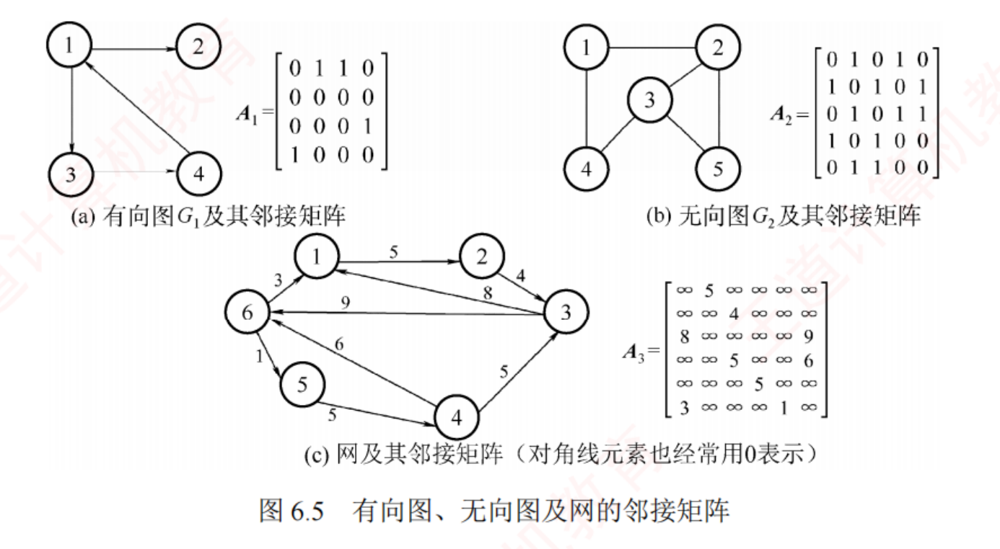
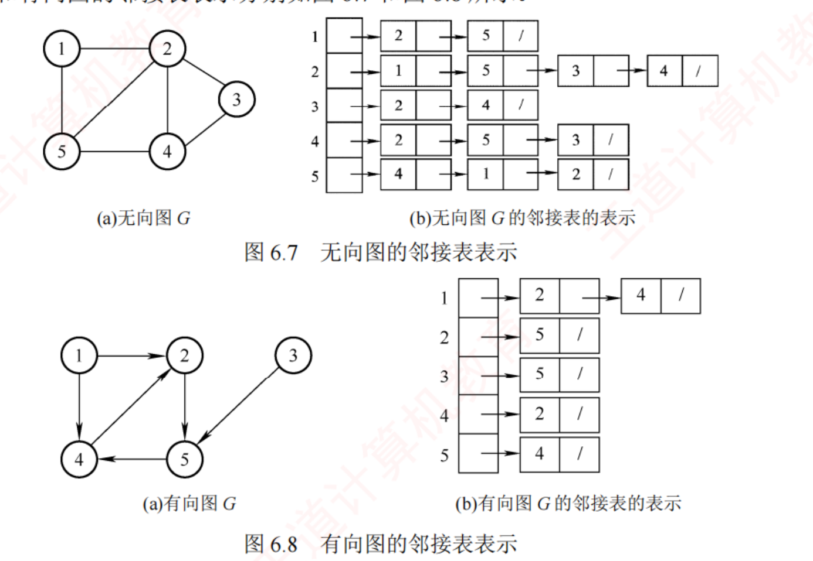
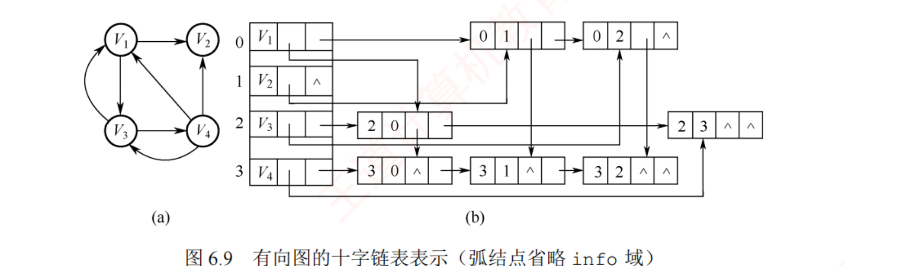
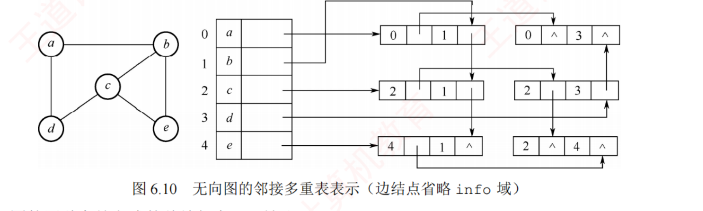
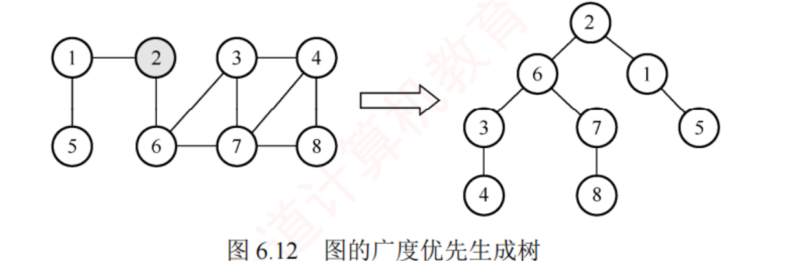
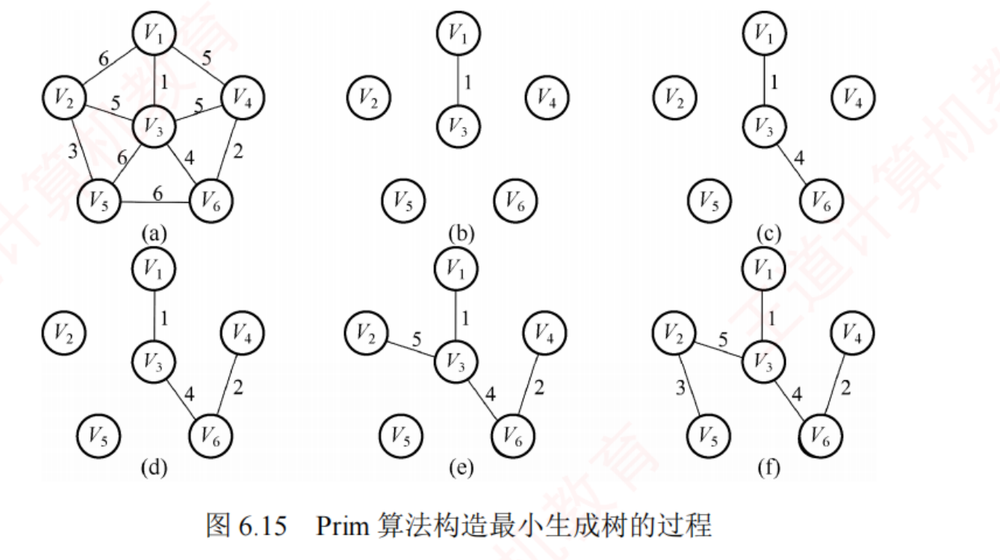
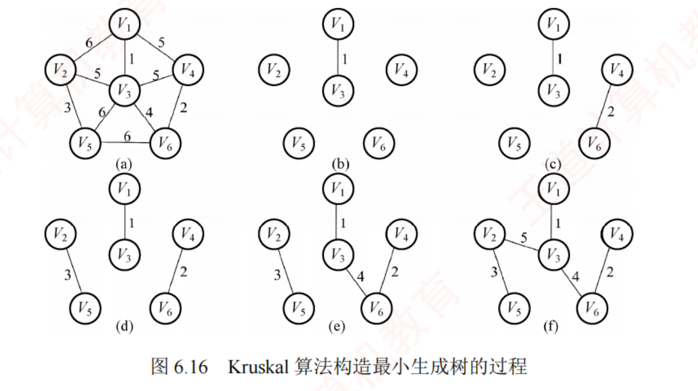
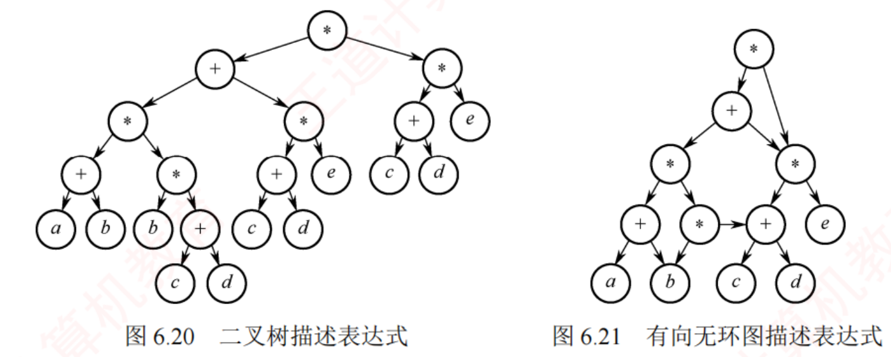
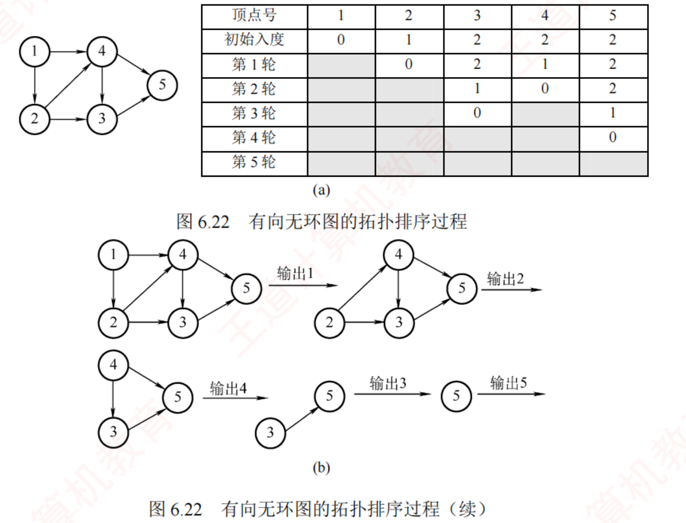
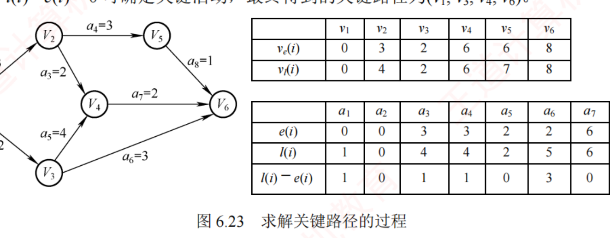

← 返回 408 复盘中心
怎么读这一页： 正文是书上的内容，我只做了结构重排和取舍 ；批注分五类 ，对应三个动作——筛 （哪些是考点、哪些只是铺垫）、挖 （书上这句话背后能出什么题）、串 （它和哪一章、哪一科连着）：
我的补讲 （挖潜台词，格式固定「书上说 X → 潜台词是 Y → 所以能考 Z」）、
必记结论 、
陷阱 、
知识串联 （跨章 / 跨科的连接点）、
背景灰化 （这段考试不碰，可以快读）。6.5 是回炉新增的一整节 ：十七年来本章的 10 道综合真题 并排，压成六个手算模板、八个可默写代码模板和一本审题词典；其中 6.5.5–6.5.7 三道真题按「想 → 写 → 校」三层写 ——看完 💭 思路就合上页面自己写，别直接翻 ✍️ 卷面 📄 p.N 点开跳到原书对应页（它是溯源锚点 ，不是「这里没写你自己去看」——考点内容本页都已讲全）；紫色 考点追踪 是王道标注的真题年份。本章从原书裁切了 10 张关键插图 （邻接矩阵/邻接表/十字链表/邻接多重表/广度优先生成树/Prim/Kruskal/表达式 DAG/拓扑排序/关键路径），结点结构等简单示意我重画成了 HTML （扫描小图在暗色下发白）。
📄 p.194
本章定位
我的补讲 · 这一页怎么用（回炉后新增了一整节，读法变了）
书上说 ：（无对应内容。）潜台词是 ：本章回炉后多了一节 6.5「综合题总攻」 ，它把十七年来的 10 道综合真题 并排、压成六个手算模板 + 八个可默写代码模板 + 一本审题词典 。这一节不是附录，它是本章分值最集中的地方 所以能考 ：建议的读法是「6.1–6.4 读一遍 → 直接进 6.5 练模板 → 回头再扫一遍 6.4」 。正文告诉你算法是什么，6.5 告诉你考场上这张卷面怎么落笔 ，两者缺一不可。6.5.5–6.5.7 三道真题按「想 → 写 → 校」三层写，看完思路就合上页面自己写，别直接翻卷面 。
我的补讲 ★ · 四节的分量差了一倍，复习顺序不该按目录走
书上说 ：（考纲四条并列，看不出轻重。）潜台词是 ：按「分节页数 × 真题数」 算一遍，四节的失分密度差出一倍多：6.4 图的应用 0.78 道/页 ⭐（36 页 / 61 题 / 28 真题 / 7 道综合真题） ＞ 6.1 基本概念 0.57（7 页 / 4 真题）＞ 6.2 存储 0.38（13 页 / 5 真题 / 3 道综合真题 ）＞ 6.3 遍历 0.33（12 页 / 4 真题）。所以能考 ：复习顺序应当是「6.1 快读 → 6.2 记表 → 6.3 打地基 → 6.4 死磕」 6.4 一节独占全章一半页数、七成真题，且它自己就覆盖了 2009–2025 全部十七年 。本章若只剩两天，两天全给 6.4 都不亏。 但 6.3 不能跳 ——它密度最低却是 6.4 的地基（拓扑排序是 BFS 的变形、Prim/Dijkstra 是 BFS 的骨架）。「密度低」说的是它自己不常被直接问，不是它不重要。
知识串联 · 本章是全书唯一「一章覆盖十七年」的五章之一
全书定位 数据结构八章里，
真题年份零缺口（2009–2025 一年不落）的共有五章：ch3、ch5、ch6、ch7、ch8 。本章以
131 题 / 41 道统考真题 与
第 5 章 并列全书最大（同为 70 页）。
⟹
但两章的性格完全相反 ：
第 5 章考「数关系 + 递归」，第 6 章考「手工模拟」 。
第 5 章的算法题要你写递归，本章的综合题七成要你画表格。 复习动作不能照搬。
知识串联 · 本章的十道综合真题里，有两道是别科题面
跨科枢纽 2014（OSPF 链路状态表 → 抽象成图 + Dijkstra） 与
2018（8 城市光缆 MST + 数 TTL 跳数） ，题面全是
计算机网络第 4 章 的东西，问的却全是数据结构。
⟹
这与网络第 6 章 那道 2023 FTP 综合真题构成镜像的一对 （那道挂在应用层，四个问里三个考 TCP）。
⟹ 复习不能按章设防，要按考点设防。 详见
6.5.1 的并排表。
背景 · 考试不碰
王道复习提示里那句「图算法通常只需掌握核心思想与实现步骤，代码实现并非重点 」，放在 2021 年之前是准确的，现在要打个折扣 ——2021、2023、2024 连续三年都出了本章的算法设计题 准确的口径是 ：Prim / Kruskal / Dijkstra / Floyd 这四个算法的代码确实不必背 （十七年没考过），但 DFS / BFS / 拓扑排序 / 邻接矩阵行列扫描这四段必须能默写 。见 6.5.3 的八个代码模板。
考纲内容 ：（一）图的基本概念；（二）图的存储及基本操作——邻接矩阵、邻接表、邻接多重表、十字链表；（三）图的遍历——DFS、BFS；（四）图的基本应用——最小（代价）生成树、最短路径、拓扑排序、关键路径。
王道的复习提示 ：图算法整体难度较大，重点掌握 DFS 与 BFS ；掌握四种存储结构及其相互转换；掌握基于这些结构的遍历与典型应用。图算法通常只需掌握核心思想与实现步骤，代码实现并非重点。
我的补讲 · 这一章的重量与打法
70 页、131 道课后题、
41 道统考真题 ——体量与第 5 章并列全书第一，但两章的性格完全相反：
第 5 章考「数关系 + 递归」，第 6 章考「手工模拟」 。王道自己在 6.4 开头就写明了：直接考算法设计题的概率偏小，
多是结合具体图实例考算法的执行过程 。
所以本章的复习动作只有两个：
① 把八个算法在纸上手推到不用想 （BFS / DFS / Prim / Kruskal / Dijkstra / Floyd / 拓扑排序 / 关键路径）；
② 把「存储结构 → 复杂度 / 唯一性」这张对照表背死 ——选择题一半以上出在这张表上。
全章的重心在
6.4（61 题、28 道真题） ，其中关键路径几乎年年出综合题。而 6.1 那些"至少多少条边"的题看着杂，其实只有
三条临界线 （见下）。
配套动手 ：
图算法八合一模拟器 （可单步看 Prim/Kruskal/Dijkstra/Floyd/拓扑/关键路径/BFS/DFS 的每一步状态）、
练习系统第 6 章 131 题 、
套路库 ch6 共 9 张卡 。
6.1 图的基本概念
6.1.1 图的定义
📄 p.194–195
我的补讲 · 「有限非空集」五个字每年都在考
书上说 ：V 是顶点的有限非空 集，E 可以为空。潜台词是 ：命题人拿这一条和线性表、树做三方对照 ——线性表可以是空表、树可以是空树，只有图不能空 。而反过来 E 可以空 （n 个孤立点仍是合法的图），这就为后面所有「至少多少条边」的题留下了下限。所以能考 ：选择题里凡出现「图可以没有顶点」「空图也是图」一律判错；凡出现「图至少要有一条边」也判错。这两个方向各考过一次。
我的补讲 · 为什么统考只讨论简单图
书上说 ：本书（以及统考）只讨论简单图——无重复边、无自环。潜台词是 ：这句话是后面一切公式的前提 。「无向完全图边数 n(n−1)/2」「顶点度 ≤ n−1」「n 个顶点连通至少 n−1 条边」全都建立在「不许有重边和自环」之上。一旦允许多重图，这些上界统统失效 （重边可以无限加）。所以能考 ：做「最多多少条边」的题时，心里要默念一句「简单图」 ，否则会觉得题目没有上界。另外注意：邻接矩阵的主对角线全 0，正是「无自环」的直接体现 ——这一条在 6.2 的选择题里被单独考过。
知识串联 · 图是最一般的结构，前面五章都是它的特例
跨章总纲 线性表 （
第 2 章 ）＝ 每个结点最多一个前驱、一个后继；
树 （
第 5 章 ）＝ 每个结点最多一个前驱、可以多个后继；
图 ＝
前驱后继的个数都不设限 。
⟹ 这就是为什么
树的遍历是图遍历的特例 （6.3 明写了这句），也是为什么
树不需要 visited[] 而图必须有 ——树没有回路，图有。
把这条链记住，本章很多结论可以从第 5 章直接推过来。
图 G 由顶点集 V 和边集 E 组成，记为 G = (V, E) 。|V| 表示顶点数（也称图 G 的阶），|E| 表示边数。
陷阱 · 线性表可以空、树可以空，但图不能空
V 是顶点的有限非空集 ——图中不能一个顶点也没有 ；但 E 可以为空 （只有顶点、没有边，此时是 n 个孤立点）。这一条选择题反复考。
有向图 ：E 是有向边（弧 ）的集合。弧是顶点的有序对 ⟨v, w⟩，v 是弧尾 、w 是弧头 ，称 v 邻接到 w。无向图 ：边是顶点的无序对 (v, w) = (w, v)，v 与 w 互为邻接点。简单图 ：① 不存在重复边；② 不存在顶点到自身的边（自环）。本书（以及统考）只讨论简单图。 多重图 则允许重复边与自环。
顶点的度、入度和出度
考点追踪：无向图中顶点和边的关系（2009、2017）
我的补讲 ★ · 度和公式是本节唯一需要「列方程」的地方
书上说 ：无向图全部顶点的度之和 = 边数的 2 倍。潜台词是 ：这是一个等式 ，而 6.1 的题目总是给你「度为 4 的有 5 个、度为 3 的有 4 个、其余度均为 2」这类分组信息 ——把每组的「个数 × 度」加起来 = 2|E|，未知数只有一个，一步就解出来 。所以能考 ：2017 真题 （16 条边，度为 4 的 3 个、度为 3 的 4 个，其余度小于 3 ，问顶点数至少 多少）。已用的度和 = 3×4 + 4×3 = 24，总度和 = 2×16 = 32，剩 8 个度要分给「度 < 3」的顶点；要顶点数最少 ，就让剩下的每个顶点度尽可能大 ——即取 2 11 个。「至少多少个顶点」⟹ 其余顶点取允许的最大度；「至多多少个顶点」⟹ 取最小度 。这个方向搞反是本类题的头号失分点。
我的补讲 · 有向图顶点的度最大是 2(n−1) 不是 n−1
书上说 ：有向图 TD(v) = ID(v) + OD(v)。潜台词是 ：入度和出度是两笔独立的账 。简单有向图里 v 与其余 n−1 个顶点之间，每一对都可以有两条方向相反的弧 ，所以 v 最多有 n−1 条入弧 + n−1 条出弧 = 2(n−1) 。所以能考 ：直接考过（「有 n 个顶点的有向图中顶点的度最大可达」答案 2n−2 ）。标准错项是 n−1 ——那是无向图 的答案。看到「度的最大值」先问一句「有向还是无向」，差一倍。
知识串联 · 度和公式 = 树里那条「结点数 = 边数 + 1」
跨章 第 5 章 反复用的
n = n₀ + n₁ + n₂ 与
n₀ = n₂ + 1 ，其实都是度和公式在树上的特例：树有 n−1 条边 ⟹ 度之和 = 2(n−1)，把各结点按度分组展开就得到那两式。
⟹
第 5 章「用两个方程解结点数」和本节「用度和方程解顶点数」是同一套动作 ，2016 那道正则 k 叉树的推导题与 2017 这道度和题可以对着做。
必记结论 · 度和公式（本节最高频的一条）
· 无向图 ：TD(v) = 依附于 v 的边数；全部顶点的度之和 = 边数的 2 倍 （每条边被两个端点各数一次）。有向图 ：TD(v) = ID(v) + OD(v)；全部顶点的入度之和 = 出度之和 = 边数 。一律先列这个方程 ，再让"其余顶点"取允许的最大度 （求顶点数最少）或最小度。
路径、回路、距离
考点追踪：路径、回路、简单路径、简单回路的定义（2011）
我的补讲 · 「路径长度数边不数点」，一个字的定义值一整道题
书上说 ：路径长度 = 路径上边的数目。潜台词是 ：n 个顶点的路径长度是 n−1 。命题人在这上面设的坑遍布全章：BFS 求「非带权最短路径」数的是边数、Aⁿ 中「长度恰为 n」数的是边数、TTL 跳数（2018 真题第 3 问）数的也是边数。所以能考 ：凡遇到「长度」「距离」「跳数」，先在草稿上把路径写成顶点序列，再数箭头 而不是圆圈 。2018 那道题问 TTL=5 够不够，数错一个就答反。
我的补讲 · 「边数 > n−1 一定有环」的正确用法与误用
书上说 ：若图有 n 个顶点，且边数大于 n−1，则此图一定有环。潜台词是 ：这句话对无向图 成立，且是充分不必要 条件 等于 n−1 时也可能有环（比如「一个三角形 + 一条悬边 + 一个孤立点」，n=5、e=4=n−1，却有环）。所以能考 ：6.1-1 「n 个顶点 n 条边的无向图一定 是」答案是 D 有环 （因为 n > n−1）；但反过来问「有环 ⟹ 边数一定大于 n−1」就是错的 。连通性也别顺手推 ：n 个顶点 n 条边不保证连通（可以是「四点成环 + 一个孤立点」）。
知识串联 · 「非带权最短路径 = 边数最少」贯穿三科
局部性之外的第二条主线 本节的「距离」定义在三处被直接复用：
6.3 的 BFS 求单源最短路 （数边）·
网络 4.4 的路由算法 （RIP 用
跳数 作度量，正是边数）·
网络 4.2 的 TTL （每过一台路由器减 1）。
⟹
2018 那道真题就在这个接缝上出题 ：先让你用图论求出 MST，再让你在这棵树上按「边数」数 TTL。
两科用的是同一个「长度」。
路径长度 = 路径上边的数目 （不是顶点数）；首尾顶点相同的路径称为回路 或环 。简单路径 ：顶点不重复出现；简单回路 ：除首尾外其余顶点不重复。距离 ：u 到 v 最短路径的长度；不存在路径则距离为 ∞ 。若图有 n 个顶点，且边数大于 n − 1，则此图一定有环。
子图、连通与强连通
考点追踪：图的连通性与边和顶点的关系（2010、2022）
我的补讲 ★ · 「极大」与「极小」是一对反义词，别记混
书上说 ：连通分量是极大连通子图，生成树是极小连通子图。潜台词是 ：两个「极」字管的是不同的量 ——极大管的是「顶点和边尽可能多」（多到不能再多），极小管的是「在保持连通的前提下边尽可能少」 。所以连通分量可能有环、生成树一定无环。所以能考 ：6.1-10 直接问「G′ 是 G 的生成树，下列哪句不对」，标准错项就是「G′ 为 G 的连通分量 」。记一句话：生成树永远不是连通分量 （除非那个分量本身就是棵树）。无向图讲连通性，有向图讲强连通性 。把「强连通图」安到无向图上（或反过来）是另一个高频错项。
我的补讲 · 三条「至少 / 保证」临界线的推导逻辑（不要死背数字）
书上说 ：（散在课后题的答案里，正文没有归纳。）潜台词是 ：这类题的答案永远来自一个极端构造 ，想清楚构造就不用背：连通所需最少边 = n−1 ⟸ 极端构造：一棵树 ；保证连通所需边数 = (n−1)(n−2)/2 + 1 ⟸ 极端构造：n−1 个点搭成完全图、剩 1 个孤立点 ，这是「能不连通」的最大边数，再加一条就非连不可（2010 真题 ：7 个点 ⟹ 15+1 = 16 ）；非连通图给定边数时顶点最少 ⟸ 同一个构造反着用：28 条边要塞进一个完全图，n(n−1)/2 ≥ 28 ⟹ n = 8，再加 1 个孤立点 ⟹ 9 个 （6.1-5、6.1-综1 是同一道）。所以能考 ：看清「能够」还是「保证」 能 让 7 个点连通，但要保证 任何情况下都连通得 16 条。2010 真题考的就是这两个字。
我的补讲 · 连通分量最多 = 把边全塞进一个完全图
书上说 ：（无对应正文。）潜台词是 ：要让分量尽可能多 ，就要让边尽可能挤在少数顶点上 ——因为每条边至多让分量数减 1，而挤在一起时很多边是「浪费」的（不减少分量数）。所以能考 ：6.1-11 （51 个顶点 21 条边，分量最多几个）：21 条边恰好能装进 7 个顶点的完全图（7×6/2 = 21），剩 44 个孤立点 ⟹ 1 + 44 = 45 。解法固定：先解 k(k−1)/2 ≥ e 求最小的 k，答案 = (n − k) + 1。
知识串联 · 连通分量 ⟷ 并查集
分块与映射 「判断两个顶点在不在同一个连通分量里」正是
第 5 章 5.5 并查集 的看家本领，也是
6.4.1 Kruskal 算法每一步要做的事 。
⟹
本节的「连通分量」是概念，5.5 的并查集是它的数据结构实现，6.4 的 Kruskal 是它的应用 ——三处讲的是同一件事，
复习时应当串起来一次过 ，而不是分三次背。
陷阱 · 顶点子集 + 边子集 ≠ 一定是子图
设 V′ ⊆ V、E′ ⊆ E，V′ 和 E′ 未必能构成子图 ——因为 E′ 中某条边关联的顶点可能不在 V′ 里，那就"有边没端点"。这个坑在 6.1 的选择题里出现了两次（说法 B、说法 D），一看到"任意子集都构成子图"就是错的。
生成子图 ：满足 V(G′) = V(G) 的子图（顶点一个不少，边可以少）。连通 / 连通图 （无向图）：v、w 之间有路径即连通；任意两顶点都连通则 G 是连通图。连通分量 = 无向图的极大连通子图。 强连通 / 强连通图 （有向图）：v 到 w 和 w 到 v 都有路径才叫强连通。强连通分量 = 极大强连通子图。 生成树 ：连通图的极小连通子图 ，包含全部 n 个顶点、恰好 n − 1 条边 。去掉任一条边就不连通，加上任一条边就成回路。 非连通图各连通分量的生成树合起来叫生成森林 。
必记结论 · 极大 vs 极小（选择题专门拿这对做文章）
极大连通子图（连通分量） ：要求包含尽可能多 的顶点和边——所以它把依附于其顶点的边全都吃进来，可能有回路。极小连通子图（生成树） ：要求在保持连通 的前提下边尽可能少 ——所以恰好 n−1 条边、无环。生成树永远不是连通分量 （除非该分量本身就是树）。"G′ 是 G 的连通分量"是这类题的标准错误选项。无向图讨论连通性，有向图讨论强连通性 ，把"强连通图"安到无向图上是另一个常见错项。
网、完全图、稠密图与稀疏图
我的补讲 · 稀疏 / 稠密的界不用背，它只决定「选哪种存储」
书上说 ：一般认为 |E| < |V|log₂|V| 时可视为稀疏图。潜台词是 ：「一般认为」四个字说明这不是硬定义，统考不会让你拿它去判定某张具体的图 。它真正的用处只有一个——在 6.2 和 6.4 里替你选存储结构和算法 ：稠密用邻接矩阵 + Prim，稀疏用邻接表 + Kruskal。所以能考 ：不会直接考这个不等式，但会考它的下游结论 （「Prim 适合稠密图、Kruskal 适合稀疏图」考过三次）。把复习力气花在下游，别背这个界。
背景 · 考试不碰
有向树 （恰有一个顶点入度为 0、其余入度均为 1 的有向图）这个定义在本章再未出现过 ，也没有任何一道真题考它；它只是为了让「树是图的特例」这句话在有向情形下也说得通。知道有这么个说法即可，不必记忆。 「网」这个术语本身 ——它就是带权图的另一个叫法，题目里出现「网」直接读成「带权图」 ，不必区分。
知识串联 · 完全图的边数就是「两两配对」，全书都在用
跨章 n(n−1)/2 这个数在四个地方出现过同一副面孔：本节的
无向完全图边数 ·
第 8 章 冒泡/直接插入排序的
最坏比较次数 ·
第 7 章 顺序查找的
总比较次数 ·
第 5 章 并查集最坏情形的合并代价。
⟹
它们全是「从 n 个里取 2 个」 。
见到 n(n−1)/2 就该条件反射地想「两两配对」，而不是分别去背四个公式。
网 ＝带权图；带权路径长度 ＝路径上所有边权之和。无向完全图 ：|E| 达到最大值 n(n−1)/2 ；有向完全图 ：|E| 达到 n(n−1) （任意两点间有两条反向弧）。一般认为 |E| < |V|log₂|V| 时可视为稀疏图 ，否则为稠密图。
有向树 ：恰有一个顶点入度为 0、其余顶点入度均为 1 的有向图。
必记结论 ★ · 本节全部「至少/保证」题都归到三条临界线
6.1 的选择题里有六七道都在问"至少多少条边/顶点""保证连通需要多少边"，看着杂，其实只有三句话：① 连通所需的最少边数 = n − 1 （此时是一棵树）；反过来 |E| < n − 1 ⟹ 一定不连通 （2022 真题 D 项）。② 非连通所能拥有的最多边数 = (n−1)(n−2)/2 （n−1 个点搭成完全图 + 1 个孤立点）；所以要保证 （任何情况下都）连通，需要 (n−1)(n−2)/2 + 1 条边（2010 真题：7 个顶点 → 15 + 1 = 16）。③ 连通分量最多 ：把所有边塞进同一个完全图 里，其余顶点全孤立（51 点 21 边 → 7 点完全图恰好 21 条边，44 个孤立点 ⟹ 45 个分量）。强连通有向图最少边 = n （首尾相接的一个环）；有向图中一个顶点的度最大 = 2(n−1) 。⚠️ 分辨"能够"与"保证" ：6 条边就"能"让 7 个点连通，但只有 16 条边才"保证"在任何情况下都连通——2010 真题考的就是这两个字。
6.2 图的存储及基本操作
6.2.1 邻接矩阵法
📄 p.201–203
考点追踪：图的邻接矩阵存储及相互转换（2011、2015、2018）
我的补讲 · 「不考虑压缩」五个字是选择题的暗号
书上说 ：无向图的邻接矩阵一定对称，实际存储只需保存上（或下）三角。潜台词是 ：这里藏着一个口径切换 ——不压缩时空间是 O(|V|²)、压缩后是 n(n+1)/2 仍是 O(|V|²) ，量级没变，但具体格子数变了一半 。选择题只要出现「不考虑压缩存储的情况下」这句限定，就是在提醒你按满矩阵 n² 算 。所以能考 ：6.2-3 （n 个顶点 e 条边的无向图，邻接矩阵中零元素个数）答案是 n² − 2e ——非零元素是 2e 不是 e 这个「×2」是本节最常漏的一步。
我的补讲 · 主对角线与对称性，是判定图类型的两把尺子
书上说 ：（正文只给了定义，没有把这两条并列成判定法。）潜台词是 ：拿到一个陌生矩阵，两秒钟能读出两件事 ：① 不对称 ⟹ 必是有向图 （对称则两种都有可能，因为有向图也可以每对弧都成双）；② 主对角线全 0 ⟹ 无自环 （简单图必然如此）。所以能考 ：6.2-2 「主对角线全 0、其余全 1，则该图一定是」——答案是完全图 （无向有向都可能，但一定完全）。标准错项是「一定是无向图」
知识串联 · 邻接矩阵的压缩存储，就是第 5 章那套特殊矩阵
分块与映射 无向图邻接矩阵是
对称矩阵 、DAG 按拓扑序编号后是
上三角矩阵 ——这两种正是
第 5 章 「特殊矩阵的压缩存储」讲的对象，下标公式一模一样。
⟹
2011 真题（6.4-综9）就是把这两章缝在一起考 ：给你一个按行优先压缩的一维数组，让你先还原成上三角矩阵，再画图、再求关键路径。
第一问考的是第 5 章，后两问才是第 6 章。
用一个一维数组存顶点信息，一个 n × n 的二维数组 存边信息（这个二维数组就是邻接矩阵 ）。A[i][j] = 1 表示 (vᵢ,vⱼ) 或 ⟨vᵢ,vⱼ⟩ ∈ E，否则为 0。带权图 ：有边存权值 wᵢⱼ，无边存 0 或 ∞ （对角线元素也常用 0 表示）。

图 6.5 有向图、无向图及网的邻接矩阵（裁自原书 p.202）。看 (c)：网的非边位置写 ∞，对角线写 0 ——这正是选择题里"入度 = 第 i 列非 ∞ 且非 0 的元素个数"那道题的来源。
#define MaxVertexNum 100 //顶点数目的最大值
typedef char VertexType; //顶点对应的数据类型
typedef int EdgeType; //边对应的数据类型
typedef struct{
VertexType vex[MaxVertexNum]; //顶点表
EdgeType edge[MaxVertexNum][MaxVertexNum]; //邻接矩阵，边表
int vexnum,arcnum; //当前顶点数和边数
}MGraph;
王道的三条「注意」 ：① 简单应用可直接用二维数组当邻接矩阵；② 仅表示边是否存在时 EdgeType 可用 0/1 枚举；③ 邻接矩阵的空间复杂度为 O(|V|²)，只与顶点数有关，与边数无关 。
邻接矩阵法的 6 个特点
考点追踪：邻接矩阵的遍历的时间复杂度（2021） · 基于邻接矩阵的顶点的度的计算（2013、2021、2023） · 计算 A² 并说明 Aⁿ[i][j] 的含义（2015）
我的补讲 ★ · 「行出列入」四个字要练成条件反射
书上说 ：有向图第 i 行非零元素个数 = 出度，第 i 列非零元素个数 = 入度。潜台词是 ：这是本章被复用次数最多的一句话 ——2013 选择题 （给 4×4 矩阵求各顶点的度）、2021 算法题 （数奇度顶点）、2023 算法题 （比出度与入度）全靠它，三年三种题型、同一句话 。所以能考 ：口诀 「行出列入，度 = 行 + 列」 。写代码时行和是 Edge[k][m]、列和是 Edge[m][k] （见 6.5.3 模板①）。两个附加动作缺一不可 带权图要同时排除 0 和 ∞ ，它们表示的都不是边——6.2-4 的四个选项就是拿「非 ∞」和「非 ∞ 且非 0」做文章 。
我的补讲 · Aⁿ 的两个字最容易背反
书上说 ：Aⁿ[i][j] = 从 i 到 j 长度恰为 n 的路径数量。潜台词是 ：幂次是「长度」，元素值是「条数」 。命题人把这两个词对调，就是一个现成的错误选项（6.2-8 考的正是这个）。而且是「恰好」不是「不超过」 ——要算「长度不超过 n」得求 A + A² + … + Aⁿ。所以能考 ：2015 综合真题 让你算 A² 并解释 A²[0][3] = 3 的含义。手算捷径 ：A² 的第 i 行 = 把 A 中「i 的各个邻居」那几行相加 ，比做 n² 次内积快得多。免费自查点 ：无向图的 A²[i][i] 必等于顶点 i 的度 （出去再原路返回）。这里的「路径」允许重复经过顶点 （所以对角线才非零）；若题目问的是不重复顶点的简单路径 ，这个结论不成立 。
我的补讲 · 「查边 O(1)、数边 O(|V|²)」是一对必须同时记住的反差
书上说 ：判断两顶点间是否有边很容易，但确定图中共有多少条边必须扫描整个矩阵。潜台词是 ：邻接矩阵是「点查快、全局慢」 ——因为它是随机存取结构，问一个格子 O(1)，问全局就得挨个看。而邻接表恰好相反 （数边只要走一遍链表 O(|V|+|E|)，查某两点间有没有边却要线性查找）。所以能考 ：这一对反差是 6.2 选择题的主战场 。千万别背成「邻接矩阵一定更快」或「邻接表一定更省」 各有一半优势，题目问哪个操作就用哪一半 。
背景 · 考试不碰
王道在特点②③ 之外还提了一句「简单应用可以直接用二维数组作为图的邻接矩阵」「仅表示边是否存在时 EdgeType 可采用值为 0 和 1 的枚举类型」——这两句是写代码时的工程建议，统考从不考 。真正要背的只有特点 ①③④⑥ 四条 （对称/唯一、行出列入、空间只与顶点数有关、Aⁿ 的含义）。
知识串联 · 「空间只与顶点数有关」是空间换时间的典型
空间换时间 邻接矩阵不管有几条边，一律吃掉 O(|V|²)——
用固定的大空间换来 O(1) 的查边速度 。这与
操作系统 3.1 的页表 （不管进程用没用到，页表项照占）、
第 7 章散列表 的装填因子留白、
组原 3.6 的 TLB 是同一条设计哲学。
⟹
稀疏图上这笔买卖就亏了 （大量格子存 0），所以才要换邻接表。
「什么时候该用空间换时间」的判据是「利用率高不高」，这一条三科通用。
知识串联 · Aⁿ 数路径条数 ⟷ 网络里的可达性
跨科 「矩阵幂 = 长度为 n 的路径条数」在
计算机网络 4.4 有个直接的亲戚：
距离向量路由（RIP）每一轮迭代就是在做一次「矩阵与向量的 min-plus 乘法」 ，跳数每轮加 1 向外扩散，与 Aⁿ 的幂次逐级增长是同一个机制。
⟹
Floyd 算法（6.4.2）更是把这件事写明了 ：A⁽ᵏ⁾ 允许中间顶点编号不超过 k，逐轮放宽 ——
本质就是矩阵的逐次幂运算 。
无向图的邻接矩阵一定是对称矩阵 ，实际存储只需保存上（或下）三角；顶点编号固定时，邻接矩阵唯一 。无向图：第 i 行（或第 i 列）非零元素个数 = TD(vᵢ) 。
有向图：第 i 行非零元素个数 = 出度 OD(vᵢ)；第 i 列非零元素个数 = 入度 ID(vᵢ) 。
判断任意两顶点之间是否有边很容易（O(1) 直接访问 ），但要确定图中共有多少条边，必须扫描整个矩阵 O(|V|²) ，代价大。
稠密图 更适合采用邻接矩阵存储。设 G 的邻接矩阵为 A，则 Aⁿ[i][j] = 从顶点 i 到顶点 j 长度恰为 n 的路径数量 。
必记结论 ★ · 「行出列入」四个字
有向图邻接矩阵：行 = 出度，列 = 入度，度 = 行 + 列 。2013 真题（给 4×4 矩阵求各顶点的度）和 2023 算法题（找出度大于入度的 K 顶点）靠的都是这一句。两个附加动作 ：① 拿到矩阵先看对不对称 ——不对称必是有向图；② 带权图要排除 0 和 ∞ ，它们表示的都不是边。Aⁿ 别搞反 ：幂次是路径长度，元素值是路径条数 ，而且是"长度恰好 为 n"，不是"不超过 n"。
6.2.2 邻接表法
📄 p.203–204
考点追踪：图的邻接表存储的应用（2014）
我的补讲 · 邻接表的空间公式里那个「2」在哪
书上说 ：无向图 O(|V| + 2|E|)，有向图 O(|V| + |E|)。潜台词是 ：|V| 是顶点表（顺序存储的数组），|E| 那部分是边表结点 。无向图每条边在两个顶点的边表里各出现一次 ，所以是 2|E|；有向图只在弧尾的出边表里出现一次。所以能考 ：6.2-12 （n 个顶点的无向图邻接表最多有几个边表结点）＝ 完全图 2 × n(n−1)/2 = n(n−1) 。6.2-10 （边表结点数为奇数则）⟹ 一定是有向图 这个「奇偶反推」很巧，考过一次就该记住。
我的补讲 · 邻接表「不唯一」这件事，往下管着整个 6.3
书上说 ：邻接表的表示不唯一，各边结点的链接次序取决于建表算法与边的输入次序。潜台词是 ：这条性质不是本节的终点，而是 6.3 的起点 ——遍历序列唯不唯一、生成树唯不唯一，全都由存储结构的唯一性决定。邻接矩阵唯一 ⟹ 同一源点的 DFS/BFS 序列唯一；邻接表不唯一 ⟹ 序列也不唯一。 所以能考 ：反过来用才是关键 给了具体的邻接表 ，就必须严格按表中链接顺序 走，此时答案唯一 ；题目只给边集或图形 ，序列就不唯一，做题要用「可能 / 不可能」的口气。2013、2015、2016 三道真题都吃这条。
知识串联 · 邻接表 = 数组 + 链表的混合，和散列表拉链法是同一个骨架
分块与映射 顶点表用
顺序存储 （下标直接定位 O(1)），边表用
链式存储 （长度不定、按需分配）——
这个「数组头 + 链表体」的结构与第 7 章散列表的拉链法 完全同构 ：数组下标 ↔ 散列地址，链表 ↔ 同义词链。
⟹ 两处的时空权衡也一样：
数组那头保证 O(1) 找到入口，链表那头保证不浪费空间 。
把 6.2.2 和 7.4 对着看，两边都省一半力气。
图为稀疏图时邻接矩阵浪费严重。邻接表法为图中每个顶点 vᵢ 建立一个单链表 （该链表称为顶点 vᵢ 的边表 ，有向图中称出边表 ），链表中的结点表示依附于 vᵢ 的边；边表的头指针和顶点信息采用顺序存储 ，称为顶点表 。
顶点表结点 data firstarc 边表结点 adjvex nextarc (info)
（对应原书图 6.6。data 存顶点信息、firstarc 指向第一条依附该顶点的边；adjvex 存与该顶点邻接的另一顶点的编号 、nextarc 指向下一条边，info 存网的边权值。）
#define MaxVertexNum 100
typedef struct ArcNode{ //边表结点
int adjvex; //该弧所指向的顶点的位置
struct ArcNode *nextarc; //指向下一条弧的指针
//InfoType info; //网的边权值
}ArcNode;
typedef struct VNode{ //顶点表结点
VertexType data;
ArcNode *firstarc;
}VNode,AdjList[MaxVertexNum];
typedef struct{
AdjList vertices; //邻接表
int vexnum,arcnum; //图的顶点数和弧数
}ALGraph;

图 6.7 / 图 6.8 无向图与有向图的邻接表表示（裁自原书 p.203）。对着数一眼就能记住：无向图每条边在表里出现两次 （上图 8 条边 → 16 个边表结点），有向图每条弧只出现一次 。
邻接表法的 5 个特点
考点追踪：邻接矩阵法和邻接表法的适用性分析（2011）
我的补讲 ★ · 邻接表的一切缺点，都来自「入边没有索引」
书上说 ：有向图求入度必须遍历所有顶点的边表。潜台词是 ：邻接表只按「弧尾」建了索引 ，弧头方向完全没有入口。于是三件事一律退化成 O(|V|+|E|) ：① 求某顶点的入度 ；② 求某顶点的度 （因为度 = 出度 + 入度，入度那半躲不掉）；③ 删除与某顶点相关的所有边 （出边 O(|V|)，入边必须扫全表）。所以能考 ：6.2-14、6.2-15 就是逐条问这三件事 。而「求出度」是 O(1) 找到入口 + O(出度) 数完，别跟入度混为一谈。 更重要的是 ：这三条缺点就是十字链表存在的全部理由 ——下一小节读起来会顺很多。
我的补讲 · 「顶点 v 在边表中出现的次数」= 入度，不是度
书上说 ：（正文只说了入度要统计 adjvex 域等于该顶点编号的结点总数。）潜台词是 ：边表结点里存的 adjvex 是「箭头指向谁」 。所以在有向图 里，v 作为 adjvex 出现几次 ＝ 有几条弧指向它 ＝ 入度 ；而 v 自己那条边表的长度才是出度 。所以能考 ：6.2-11 直接问这个，标准错项是「度」。无向图里则两者合一 ——每条边存两次，v 出现的次数恰好等于它的度。「有向还是无向」决定了同一句话的答案，读题时先圈这两个字。
我的补讲 · 建表 O(n+e) 是「遍历一遍输入」的代价，别记成 O(n·e)
书上说 ：（正文未给建表复杂度，在课后题里。）潜台词是 ：建邻接表 = 初始化 n 个顶点表头 O(n) + 每条边做一次头插 O(1)，共 O(e) ⟹ O(n+e) 。头插是 O(1) 而不是 O(链长) ，这就是为什么邻接表里边结点的顺序常常与输入顺序相反 ——也正是它「不唯一」的来源。所以能考 ：6.2-13 问建表复杂度（答 O(n+e)）。对比：由邻接表建邻接矩阵 是 O(n²) （矩阵得先全部清零），6.2-综5 那道算法题问的正是这个转换 ——初始化那一步不能省，它决定了复杂度的下界
知识串联 · 「正向索引不够，就再建一份反向索引」
空间换时间 邻接表求入度慢 ⟹ 十字链表
再挂一条 firstin 链 ；这与
操作系统 4.2 的索引文件 为反向查找建倒排、
组原 3.6 的 TLB 为页表建高速副本、
网络 4.3 的 ARP 缓存 为「IP→MAC」建反查表是
同一个动作 ：
发现某个方向的查询没有索引，就用额外空间补一份。
⟹
代价也一样 ：
插入和删除时要同时维护两份索引 ，写操作变慢。
这条权衡在四科里出现过至少五次。
知识串联 · 邻接表的边表 = 第 2 章的单链表，一行没变
跨章 ArcNode 就是
第 2 章 的单链表结点（数据域 adjvex + 指针域 nextarc），头插法建表、遍历链表、删除结点的写法
完全照搬 。
⟹
凡是本章要你「遍历某顶点的所有邻接点」，写的都是第 2 章那个 for(p=G.vertices[i].firstarc; p; p=p->nextarc) 。
2024 那道拓扑排序算法题的内层循环就是它。
空间复杂度：无向图 O(|V| + 2|E|)，有向图 O(|V| + |E|) ——系数 2 就是因为无向边存两次。稀疏图 采用邻接表能极大节省存储空间。查找指定顶点的所有邻接点 ：邻接表只需遍历对应边表（快），邻接矩阵要扫描整行（慢）。但判断两个顶点之间是否存在边 ：邻接矩阵 O(1) 直接访问 ，邻接表需要线性查找（慢）。两者各有一半优势，别背成"邻接表一定更快"。
无向图中顶点的度 = 其边表中结点的个数；有向图中出度 = 其边表中结点的个数 ，而入度必须遍历所有顶点的边表 ，统计 adjvex 域等于该顶点编号的结点总数。
邻接表的表示不唯一 ——各边结点的链接次序取决于建表算法与边的输入次序。
必记结论 · 邻接表的三个「必须遍历整个表」
① 求有向图某顶点的入度 → O(|V|+|E|)；② 删除某顶点相关的所有边 （出边 O(|V|) + 入边 O(|V|+|E|)） → O(|V|+|E|)；③ 求有向图顶点的度 （度 = 出度 + 入度，入度那半必须扫全表）。想绕开这三条，就换十字链表。 这正是十字链表存在的理由。边表结点数为奇数 ⟹ 一定是有向图 （无向图必为偶数）；题目给的邻接表里每条边都出现了两次 ⟹ 默认按无向图处理 。
6.2.3 十字链表（有向图）
📄 p.204–205
我的补讲 · 四个指针域怎么记：先分「弧头链」和「弧尾链」
书上说 ：hlink 指向弧头相同的下一条弧，tlink 指向弧尾相同的下一条弧。潜台词是 ：十字链表把每条弧同时挂在两条链上 ——一条按「谁是终点」串（弧头链，供求入度用），一条按「谁是起点」串（弧尾链，供求出度用）。顶点结点的 firstin / firstout 就是这两条链的入口。「十字」二字画的就是这两条链在弧结点处交叉。 所以能考 ：结论只有一句——求出度和入度都方便 （正是补上了邻接表的短板）。但表示仍不唯一
背景 · 考试不碰
十字链表和邻接多重表的建表算法、插入删除的具体代码 ，王道正文都没有给，统考也从未考过 ——这两种结构十七年来只出过「它存有向图还是无向图」和「照着图数度」两类题 （6.2-17、6.2-18、2024 真题）。本小节和下一小节的复习目标只有三件事 ：认得结点结构图、记住「十字有向、多重无向」、会照着图把边集读出来。不必去推导指针怎么串。
知识串联 · 一个结点挂在多条链上 = 第 2 章的多重链表思想
跨章 「同一个结点同时属于两条（或多条）链表」这个手法，
第 2 章 的静态链表、双向链表已经铺垫过；
操作系统 2.1 的 PCB 更是典型——
同一个 PCB 既挂在就绪队列上，又挂在父子进程链上 。
⟹
共同的代价 ：删除一个结点时，
必须把它从每一条链上都摘下来 ，漏一条就成悬空指针。
这也是为什么这类结构「查得快、改得烦」。
十字链表是有向图的一种链式存储结构。 每条弧用一个弧结点 表示，每个顶点用一个顶点结点 表示。
弧结点 tailvex headvex hlink tlink (info) 顶点结点 data firstin firstout
tailvex / headvex ：分别存放该弧的弧尾 、弧头 顶点编号。hlink ：指向弧头相同 的下一条弧；tlink ：指向弧尾相同 的下一条弧。⟹ 弧头相同的弧串在同一条链上，弧尾相同的弧也串在同一条链上。firstin ：指向以该顶点为弧头 的第一条弧；firstout ：指向以该顶点为弧尾 的第一条弧。

图 6.9 有向图的十字链表表示（裁自原书 p.205，弧结点省略 info 域）。注意顶点结点之间是顺序存储的 。
必记结论 · 十字链表的卖点
在十字链表中既容易找到以 vᵢ 为尾的弧，也容易找到以 vᵢ 为头的弧 ，因此求顶点的出度和入度都很方便 （对比邻接表：入度要扫全表）。图的十字链表表示不唯一 ，取决于弧的输入顺序。
6.2.4 邻接多重表（无向图）
📄 p.205–206
考点追踪：图的邻接多重表表示的分析（2024）
我的补讲 · 邻接多重表解决的是「一条边存了两份」的麻烦
书上说 ：邻接表在「删除一条边」时需要分别遍历两个顶点的边表，效率较低。潜台词是 ：问题的根子是无向图的一条边在邻接表里有两个副本 ，删一次要删两处、改一次要改两处，还容易漏。邻接多重表让每条边只有一个结点 ，同时挂在两个端点的链上——删除时只摘一个结点 。所以能考 ：一句话结论——邻接多重表适合「频繁删边 / 给边打标记」的场合 。它省的是「重复存储」，不是「空间量级」
知识串联 · 「一份数据、多处引用」是全书的通用解法
跨章 邻接多重表把重复的边合并成一份、用两条链共享，与
6.4.3 用 DAG 描述表达式 （公共子表达式只存一次、多个父结点共享）是
同一个念头 ；
操作系统 4.1 的硬链接 （多个目录项指向同一个 inode）、
第 5 章哈夫曼树 的前缀码共享路径，也都在做这件事。
⟹
共同的收益是省空间、共同的代价是「删除时要数引用」 ——OS 的 inode 里那个
链接计数 正是为此而设。
邻接多重表是无向图的一种链式存储结构。 邻接表虽便于获取顶点和边的信息，但执行"判断两顶点间是否存在边""删除一条边"等操作时，需要分别遍历两个顶点的边表 ，效率较低。邻接多重表把每条边只用一个结点表示 ，判断边时只需遍历一次。
边结点 ivex ilink jvex jlink (info) 顶点结点 data firstedge
ivex / jvex ：该边依附的两个顶点的编号；ilink 指向依附于 ivex 的下一条边，jlink 指向依附于 jvex 的下一条边。所有依附于同一顶点的边串联在同一链表中 ；由于每条边依附两个顶点，其边结点同时链接在两个链表中 。

图 6.10 无向图的邻接多重表表示（裁自原书 p.205，边结点省略 info 域）。2024 真题（求顶点 b、d 的度）就是给这张图的变体。
我的补讲 · 2024 真题的秒杀读法
真题给一张邻接多重表，问某两个顶点的度。不要顺着指针爬链表 ——那会爬晕。正确动作：把所有边结点的 (ivex, jvex) 二元组抄下来，得到边集 ，然后数每个顶点在边集里出现了几次，那就是它的度 。指针域 ilink/jlink 在这类题里根本不用看。
陷阱 · 十字有向、多重无向
十字链表只能存有向图，邻接多重表只能存无向图 ——每年都有选择题直接问这两句，两个词记反就丢分。口诀：「十字有向、多重无向」 （十字路口有方向；多重边表是无向的重复边合并）。
表 6.1 图的四种存储方式总结（必背）
📄 p.206
我的补讲 · 这张表按列背不如按行背
书上说 ：（表格四列并排。）潜台词是 ：竖着背四种结构容易串味，横着背五行则每行只有一句话 ：空间行 ：只有邻接矩阵是 O(|V|²)，其余三个都是 O(|V|+|E|)；唯一性行 ：只有邻接矩阵唯一 适用对象行 ：十字链表只存有向图、邻接多重表只存无向图 ，另两个通吃；找相邻边行 ：邻接表求入度 要扫全表，是唯一的痛点；删除行 ：邻接矩阵删顶点 要大量移动数据，邻接表删无向边 要动两处。所以能考 ：6.2-1、6.2-7、6.2-16 三道「总辨析」题就是把这五行打散重组 。按行记，一句一个考点。
知识串联 · 唯一性这一行，直接管着 6.3 的全部判断题
本章内主线 「邻接矩阵唯一」这一格往下延伸出 6.3 最高频的判断句 ：邻接矩阵 + 同一源点 ⟹ DFS/BFS 序列与生成树都唯一 ；邻接表 ⟹ 都不唯一 。再往下，6.4 的拓扑序列唯一性 （2011、2024）又是另一套判据（每步入度为 0 的顶点是否只有一个），两者不能混用 本章一共有三处在讲「唯一性」，判据各不相同 ：存储结构的唯一（看是不是矩阵）· 遍历序列的唯一（看存储结构）· 拓扑/MST 的唯一（看每步有没有得选）。读到「唯一」二字先分清是哪一处。
邻接矩阵 邻接表 十字链表 邻接多重表 空间复杂度 O(|V|²) 无向 O(|V|+2|E|) O(|V|+|E|) O(|V|+|E|) 找相邻边 遍历对应行或列 O(|V|) 找有向图的入度必须遍历整个邻接表 很方便 很方便 删除边或顶点 删除边很方便，删除顶点需大量移动数据 无向图中删除边或顶点都不方便 很方便 很方便 适用于 稠密图 稀疏图和其他 只能存有向图 只能存无向图 表示方式 唯一 不唯一 不唯一 不唯一
必记结论 · 这张表里最常单独出题的两行
① 唯一性行 ：只有邻接矩阵唯一 ，其余三个都不唯一。这一行往下会直接决定 6.3 的一个大考点——邻接矩阵 + 同一源点 ⟹ DFS/BFS 序列和生成树都唯一；邻接表 ⟹ 都不唯一 。② 空间行 ：邻接矩阵 O(|V|²) 只与顶点数有关、与边数无关 ；邻接表两者都有关 。
6.2.5 图的基本操作
📄 p.206
我的补讲 · 这套接口是「与存储结构无关」的护身符
书上说 ：FirstNeighbor 没有邻接点时返回 −1，NextNeighbor 到末尾时返回 −1。潜台词是 ：两个 −1 就是循环的终止条件 ，于是遍历某顶点全部邻接点的标准写法固定为for(w=FirstNeighbor(G,v); w>=0; w=NextNeighbor(G,v,w))邻接矩阵、邻接表都能套 ——阅卷时不会因为「你擅自假设了某种存储」而扣分。所以能考 ：但要看清题目给没给具体定义 2021、2023、2024 三道算法真题都明确给出了 MGraph 邻接矩阵定义 ，那就直接用双重下标 G.Edge[i][j]，不要再套这套接口 ——题目给了什么就用什么，自作主张换接口反而显得没读题。
知识串联 · 「封装出统一接口」= 三科都在讲的抽象
跨科 用
FirstNeighbor/NextNeighbor 把存储细节藏起来，使同一份算法能跑在两种结构上——这与
操作系统 5.2 的设备无关软件 （用统一的读写接口屏蔽不同设备）、
网络 1.2 的分层服务 （上层只调用下层的服务原语，不管它怎么实现）是
完全同一个思想 。
⟹
三科各自给它起了不同的名字 （数据结构叫「基本操作」、OS 叫「设备独立性」、网络叫「服务与协议分离」），
但要你回答「为什么这么设计」时，答案是同一句：让上层与下层的实现解耦。
统考算法题里常直接调用下面这套接口（题目会给出定义，不必背，但要会用 ）：
Adjacent(G,x,y) 判断是否存在边 ｜ Neighbors(G,x) 列出所有邻接点 ｜ Get_edge_value / Set_edge_value 取/置边权InsertVertex / DeleteVertex / AddEdge / RemoveEdge 增删顶点与边FirstNeighbor(G,x)没有邻接点或 x 不存在则返回 −1 ；NextNeighbor(G,x,y)y 是最后一个邻接点则返回 −1 。
我的补讲 · 这两个 −1 是算法题的循环骨架
统考算法题里遍历某顶点全部邻接点的标准写法就是：for(w=FirstNeighbor(G,v); w>=0; w=NextNeighbor(G,v,w))把"返回 −1"当成循环终止条件 ，这样写出来的代码与存储结构无关 （邻接矩阵、邻接表都能套），阅卷时不会因为"你假设了某种存储"而扣分。本章后面所有代码都用这个骨架。
6.3 图的遍历
📄 p.214
我的补讲 · 这一节只有 12 页、4 道真题，但它是 6.4 的地基
书上说 ：图的遍历是求解连通性问题、拓扑排序和求关键路径等算法的基础。潜台词是 ：6.3 自己的失分密度只有 0.33/页（全章最低） ，可它撑着 6.4 那 28 道真题 ——拓扑排序是 BFS 的变形（把「入度为 0」当成「可以入队」）、关键路径要按拓扑序推、Prim 与 Dijkstra 的骨架就是「每轮挑一个点并入集合」的 BFS 变体。所以能考 ：本节直接考的题不多，但读薄了会在 6.4 处处卡壳 。复习动作是把 BFS/DFS 两段代码默到能改 ——6.4 的算法全是在这两个骨架里塞东西。
知识串联 · 遍历 = 队列与栈的一次正面对决
队列与调度 BFS 用队列（先进先出 ⟹ 逐层推进）、DFS 用栈（后进先出 ⟹ 一条道走到黑） ——这是
第 3 章 那两种结构在本章的第一次实战。
⟹ 同一个对照在三科里反复出现：
OS 2.2 的进程调度 （FCFS 用队列 vs 抢占式用优先级）、
OS 5.3 的磁盘调度 （FCFS vs SCAN）、
网络 4.4 的路由队列 。
「用队列还是用栈」决定了推进的形状，这个判断在四科通用。
图的遍历 = 从图中某一顶点出发，沿着边访问图中所有顶点，且每个顶点仅被访问一次 。树的遍历可看作图遍历的特例。
必记结论 · 为什么图遍历一定要 visited[]
图中任一顶点都可能与其余多个顶点相邻，且可能存在回路 ——访问完某顶点后可能沿某条边又回到已访问过的顶点。因此必须设一个 visited[] 数组记录每个顶点是否已被访问 。图的遍历是连通性判断、拓扑排序、关键路径 等算法的基础。
6.3.1 广度优先搜索（BFS）
📄 p.214–217
考点追踪：广度优先遍历的过程（2013）
我的补讲 · BFS 的三句话身份，每句都是一个错误选项的来源
书上说 ：BFS 是树的层序遍历算法的推广，需借助队列，按路径长度递增访问。潜台词是 ：这三句各自对应一个高频错项——①「BFS 类似树的先序遍历」错 （先序是 DFS，BFS 对应层序 ）；②「BFS 是递归过程」错 （它逐层推进、不存在回退，DFS 才是递归的 ③「BFS 可求带权图的最短路径」错 （只对非带权，见下文）。所以能考 ：6.3-1 那道多选辨析题四个说法全是从这三句里翻出来的 。把这三句连着背，等于同时防住四个坑。
我的补讲 · visited[w]=1 写在哪一行，是 BFS 唯一的技术要害
书上说 ：（代码里把 visit(w); visited[w]=TRUE; EnQueue(Q,w); 三句连写。）潜台词是 ：置位必须发生在「入队那一刻」，不能等到出队时再置 d[] 还会被后来的更长路径覆盖，最短路径就算错了。所以能考 ：这一行是算法题的采分点 ，也是选择题「下列 BFS 代码哪个有错」的标准考法。口诀：入队即标记。 DFS 是「访问即标记」（进函数就置位） ，两者置位的时机不同但道理一样——都要在「可能被第二次碰到」之前抢先置位 。
知识串联 · BFS 就是第 5 章的层序遍历，多了一个 visited[]
跨章 把
第 5 章 5.3 的层序遍历 代码拿过来，
只加一个 visited[] 数组，就是 BFS ；反过来说，
树之所以不需要 visited[]，是因为树没有回路 （每个结点只有一个父亲，不可能从两个方向走到）。
⟹
这正是 6.3 开头那句「树的遍历可看作图遍历的特例」的具体含义 。5.3 那个「用 last 标记本层最后一个结点」的求树高技巧，
照搬到 BFS 上就能求「图的层数」 。
基本思想：访问起始顶点 v → 依次访问 v 的所有未访问过的邻接顶点 w₁, w₂, …, wᵢ → 再依次访问它们各自的未访问邻接顶点……直到所有可达顶点都被访问；若图中仍有顶点未被访问，则另选一个未访问顶点作为新的起始点重复上述过程。
必记结论 · BFS 的三句话身份
① BFS 是树的层序遍历算法的自然推广 ；② 它按路径长度递增 的次序访问顶点（先访问距离为 1 的、再距离为 2 的……）；③ 必须借助辅助队列 ，通常用非递归实现（BFS 不是递归过程 ——它逐层推进、不存在回退）。Dijkstra 单源最短路径算法和 Prim 最小生成树算法也应用了类似的思想。
bool visited[MAX_VERTEX_NUM];
void BFSTraverse(Graph G){
for(i=0;i<G.vexnum;++i) visited[i]=FALSE;
InitQueue(Q);
for(i=0;i<G.vexnum;++i)
if(!visited[i]) BFS(G,i); //对每个连通分量调用一次 BFS()
}
void BFS(Graph G,int v){
visit(v); visited[v]=TRUE; EnQueue(Q,v);
while(!QueueEmpty(Q)){
DeQueue(Q,v);
for(w=FirstNeighbor(G,v);w>=0;w=NextNeighbor(G,v,w))
if(!visited[w]){ visit(w); visited[w]=TRUE; EnQueue(Q,w); }
}
}
书上以图 6.11 为例（无向图 G，边集 a–b、a–c、b–d、b–e、c–f、c–g、e–h）：
a → b, c b → a, d, e c → a, f, g d → b e → b, h f → c g → c h → e
从 a 出发的 BFS 序列 = abcdefgh ；同一张图的 DFS 序列 = abdehcfg （下一节）。建议对着这张邻接表把两个序列各推一遍 ，或者直接用 模拟器 单步跑。
1. BFS 算法的性能分析
考点追踪：基于邻接表存储的 BFS 的效率（2012）
我的补讲 ★ · 复杂度只看存储结构，与算法名、与访问顺序都无关
书上说 ：邻接表 O(|V|+|E|)，邻接矩阵 O(|V|²)。潜台词是 ：这条规律统治全章 ——BFS、DFS、拓扑排序、关键路径四个算法的复杂度完全相同 ，因为它们都是「每个顶点访问一次 + 每条边看一次」。所以表 6.5 里这四列长得一模一样。 所以能考 ：2012 真题 直接问「邻接表存储的有向图做 BFS 的复杂度」，答 O(n+e) 。注意有向图也是 O(|V|+|E|) 而不是 O(|V|+2|E|) 无向图的空间 复杂度里，别串到时间上。
我的补讲 · 空间复杂度都是 O(|V|)，但「装的东西」不同
书上说 ：BFS 的辅助队列最坏 O(|V|)；DFS 的递归工作栈最坏 O(|V|)。潜台词是 ：量级相同，来源不同 ——BFS 的 O(|V|) 来自「最宽的那一层」 （星形图上，源点的所有邻居会同时在队里）；DFS 的 O(|V|) 来自「最深的那条路」 （一条链上，递归会压满栈）。两者的最坏情形恰好是互补的两种图形。 所以能考 ：题目若问「哪种遍历更省空间」，答案是「看图的形状」而不是某一个固定答案 ：又宽又浅的图 DFS 省，又窄又深的图 BFS 省 。这一条比死记 O(|V|) 有用。
知识串联 · DFS 的递归工作栈 = 组原的现场保护 = OS 的内核栈
中断 DFS 递归时压栈保存的「回到哪一层、下一个邻居是谁」，与
组原 5.5 中断响应 压栈保存 PC 和 PSW、
OS 1.3 系统调用切到内核栈保存现场，
是同一件事的三种说法 ：
要暂时离开当前工作去做别的，就得把「回来时需要的一切」先存起来 。
⟹
「所有递归都能用栈改写成非递归」 （本章总纲第 2 条）之所以成立，正是因为递归本来就是靠栈实现的——
手动压栈只是把编译器替你做的事自己做一遍 。
无论采用哪种存储，BFS 都需要一个辅助队列 Q，每个顶点最多入队一次 ，最坏情况下空间复杂度 O(|V|) 。时间复杂度只取决于存储结构：
邻接表 ：每个顶点均需搜索（入队）一次 O(|V|)，搜索邻接点时每条边至少访问一次 O(|E|) ⟹ O(|V| + |E|) 。邻接矩阵 ：查找每个顶点的邻接点需 O(|V|)，共 |V| 个顶点 ⟹ O(|V|²) 。
2. BFS 求解单源最短路径问题
我的补讲 · BFS 为什么能求最短路：因为「先到的一定最近」
书上说 ：BFS 总是按距离由近到远遍历，因此每个顶点首次被访问时所经过的路径就是最短路径。潜台词是 ：这条性质完全依赖「每条边长度都是 1」 。队列保证了「距离为 k 的顶点全部出队后，距离为 k+1 的才开始出队」，所以第一次碰到某个顶点时，手上那条路必然最短 。所以能考 ：一旦边权不等，这个前提就塌了 此时必须换 Dijkstra 。标准错项：「当各边权值不等 时 BFS 也能求单源最短路径」。各边权值相等 时（含全为 1），BFS 是可以用的，而且比 Dijkstra 快 ——O(|V|+|E|) 对 O(|V|²)。6.3-1 的说法 Ⅰ 考的正是这一句，它是对 的。
我的补讲 · d[] 与 path[] 是一对，答题时别只写距离
书上说 ：（代码里只维护了 d[]。）潜台词是 ：只有 d[] 只能回答「多远」，回答不了「走哪条路」 。要输出路径就得再加一个 path[w]=u（记前驱），最后从终点回溯 着打印。Dijkstra 的三个辅助数组里那个 path[] 就是干这个的 。所以能考 ：综合题问「最短路径及其长度 」时，两样都要给 手算时的做法 ：在 dist 表里每次改小一个格子，就顺手把新路径标在旁边 （见 6.5.2 手算模板③）——那就是 path[] 的纸面版。
知识串联 · 「非带权最短路 = 跳数最少」正是 RIP 协议
跨科 网络 4.4 的 RIP 用
跳数 作唯一度量，等价于把每条链路的权值都设为 1——
于是求最短路就退化成 BFS 。而
OSPF 用带权的链路度量，所以必须用 Dijkstra （
网络 4.4 明写了这一点，2014 那道综合真题考的就是它）。
⟹
两个路由协议的分野，恰好就是本章「BFS 还是 Dijkstra」的分野。 记住这组对应，两科各省一半力气。
若 G 为非带权图 ，定义 u 到 v 的最短路径 d(u,v) 为路径中所含边数 的最小值（不可达则为 ∞）。BFS 总是按距离由近到远遍历，因此每个顶点首次被访问时所经过的路径就是最短路径 。
void BFS_MIN_Distance(Graph G,int u){
//d[i] 表示从 u 到 i 的最短路径
for(i=0;i<G.vexnum;++i) d[i]=∞; //初始化路径长度
visited[u]=TRUE; d[u]=0; EnQueue(Q,u);
while(!QueueEmpty(Q)){
DeQueue(Q,u);
for(w=FirstNeighbor(G,u);w>=0;w=NextNeighbor(G,u,w))
if(!visited[w]){
visited[w]=TRUE;
d[w]=d[u]+1; //路径长度加 1
EnQueue(Q,w);
}
}
}
陷阱 · BFS 只能做非带权最短路径
BFS 一层层往外扩，无法考虑边上的权值 ，所以只适用于各边权值相等（即非带权） 的最短路径问题。边权不等时必须用 Dijkstra 。选择题的标准错项就是"当各边权值不等时 BFS 也可求单源最短路径"。"BFS 类似于树的先序/后序遍历"——错，是层序遍历 。DFS 才类似先序。
3. 广度优先生成树
我的补讲 ★ · 唯一性的判据只有一条：看存储结构
书上说 ：邻接矩阵表示唯一 ⟹ 遍历序列和生成树唯一；邻接表不唯一 ⟹ 都不唯一。潜台词是 ：唯一性不 取决于图本身，只取决于「图是怎么存的」 所以能考 ：反过来用才是关键 ——题目给了具体邻接表 ⟹ 必须严格按链接顺序走，答案唯一 （6.3-综1 里「不能先搜索 (1,3)」就是这个道理）；题目只给图形或边集 ⟹ 序列不唯一 ，此时问法一定是「下列不是 其 DFS 序列的是」（2013、2016 两道真题正是这种问法）。看清是「给表」还是「给图」，决定了你能不能说「唯一」。
我的补讲 · BFS 树一定不比 DFS 树高，这是个可以直接用的结论
书上说 ：（正文只给了生成树的定义，没有比较树高。）潜台词是 ：BFS 生成树里每个顶点的层号 = 它到源点的最短距离 （上一小节刚证过），而DFS 树里的深度只是「某一条路径的长度」，不可能比最短距离更小 。⟹ 同一张图、同一个源点，BFS 生成树的高度 ≤ DFS 生成树的高度。 所以能考 ：6.3-14 直接问这个，答案是「小或相等」 不是「一定更小」 （一条链上两者完全相同）。凡是这种比较题，先想有没有「相等」的极端例子 ，本题的极端例子就是链状图。
知识串联 · 生成树在本章出现三次，一次比一次贵
本章内主线 6.1 定义生成树 （极小连通子图、n−1 条边）→ 6.3 由遍历得到生成树 （BFS 树 / DFS 树，随存储结构而变）→ 6.4.1 最小生成树 （在所有生成树里挑权和最小的那棵）。三处是同一个对象在三个层次上的展开 ：先问「是什么」，再问「怎么造出来一棵」，最后问「怎么造出最好的一棵」。6.4 的 Prim 之所以像 BFS，正是因为它就是一棵「按权值贪心生长」的广度优先生成树。

图 6.12 图的广度优先生成树（裁自原书 p.216）。遍历过程中经过的边与访问的顶点 共同构成一棵生成树。
必记结论 ★ · 唯一性只看存储结构
邻接矩阵存储 ⟹ 表示唯一 ⟹ 从同一源点出发的 BFS 序列、BFS 生成树都唯一。 邻接表存储 ⟹ 表示不唯一（邻接点顺序取决于输入次序）⟹ 遍历序列和生成树都可能不唯一。 反过来用 ：题目给了邻接表 ，就必须严格按表中链接顺序 走，答案唯一（6.3 综合题 01 里"不能先搜索 (1,3)"就是这个道理）；题目只给边集 ，则序列不唯一，要用"可能/不可能"的口气做题。
6.3.2 深度优先搜索（DFS）
📄 p.217–218
考点追踪：深度优先遍历的过程（2015、2016）
我的补讲 ★ · 判「合法 DFS 序列」的尺子：回溯只能一层层退
书上说 ：（正文只讲了 DFS 的过程，没给判定方法。）潜台词是 ：这类题一年一道 （2013、2015、2016），做法是逐个检查「下一个顶点是否与当前顶点邻接」 ：邻接 ⟹ 正常深入；不邻接 ⟹ 说明发生了回溯 ，此时必须检查回溯路径（栈）上的每个顶点是否还有未访问的邻接点 不能跳过栈中还有未访问邻接点的顶点 。所以能考 ：这是本类题最狠的坑 。例：a→e→d→f 后要回溯，若 e 的邻居 b 还没访问，就必须先访问 b，不能直接跳到 c 。2016 真题的错误选项就是这么造出来的。
我的补讲 · 数「共有多少种 DFS 序列」只能老实枚举
书上说 ：（无对应内容。）潜台词是 ：2015 真题 给 4 个顶点 4 条弧，问从 v₀ 出发的 DFS 序列有几种，答案是 5 种 ——凭感觉数一定会漏 按分支画树 ：每遇到「当前顶点有多个未访问邻接点」就分叉，每次回溯后剩下的选择也要继续展开 。所以能考 ：这类题不要求技巧，只要求不漏 。考场上把分叉树画在草稿纸上，叶子数就是答案 ；四个顶点最多也就十来个分支，画完比心算稳得多。
背景 · 考试不碰
王道在 DFS 之后提了一句「深度优先生成森林」——非连通图各连通分量的 DFS 树合起来叫森林 。这个术语十七年没有单独出过题 ，它只是为了让 6.3.3 那句「调用次数 = 连通分量数」在非连通情形下说得通。DFS 非递归实现的具体代码 ——王道正文没给，统考也没考过；你只需要会说「所有递归都能用栈改写成非递归」这一句 （本章总纲第 2 条考过）。
知识串联 · DFS 就是第 5 章的先序遍历
跨章 对照
第 5 章 ：
DFS ↔ 先序遍历 （访问自己 → 递归孩子）、
BFS ↔ 层序遍历 。
树的先序遍历不需要 visited[]，是因为树的「孩子」不会反过来指向祖先 ；图有回边，所以必须标记。
⟹
6.3-9 那道填空题考的正是这组对应 。
把 5.3 的三种遍历与本节对着记，DFS 那段代码几乎不用重新背。
知识串联 · 「一条道走到黑再回头」= 回溯法的原型
跨章 DFS 的「深入 → 走不通 → 退回上一层换个方向」正是
回溯法 的骨架：
第 5 章 求根到叶的所有路径、本章 6.5.3 模板⑦求所有简单路径，
用的都是这一套 ，而且
都靠「递归返回前把现场还原」那一行 。
⟹
「要不要还原现场」是回溯法与普通遍历的分水岭 ：
找所有 解 ⟹ 必须还原；判连通 / 找一条 解 ⟹ 不能还原 （还原了会重复走）。
这一句能同时解释本章两道综合题的差别。
DFS 类似于树的先序遍历 ：尽可能"深"地搜索一个图。访问顶点 v 后依次从 v 的未访问邻接点出发继续深度优先遍历；走不通就回退到上一个顶点（递归返回） ，看它是否还有其他未访问的邻接点。
bool visited[MAX_VERTEX_NUM];
void DFSTraverse(Graph G){
for(v=0;v<G.vexnum;++v) visited[v]=FALSE;
for(v=0;v<G.vexnum;++v)
if(!visited[v]) DFS(G,v);
}
void DFS(Graph G,int v){
visit(v); visited[v]=TRUE;
for(w=FirstNeighbor(G,v);w>=0;w=NextNeighbor(G,v,w))
if(!visited[w]) DFS(G,w); //w 为 v 的尚未访问的邻接顶点
}
性能：递归工作栈深度最坏为 |V| ⟹ 空间复杂度 O(|V|) 。时间复杂度仅取决于存储结构、与顶点的访问顺序无关 ：邻接矩阵 O(|V|²)，邻接表 O(|V| + |E|) （与 BFS 完全相同）。
连通图的 DFS 得到深度优先生成树 ，非连通图则得到深度优先生成森林 。
我的补讲 ★ · 判断"这是不是一个合法的 DFS / BFS 序列"（本节最爱考的题型）
这类题一年一道（2013、2015、2016 都是），给一张图和四个序列，问哪个不是 。手上要有两把固定的尺子：① 判 DFS 序列 ：逐个检查"下一个顶点是否与当前顶点邻接"。若不邻接，说明发生了回溯 ——这时必须检查回溯路径（栈里）上的每个顶点是否还有未访问的邻接点 。回溯只能按栈一层层退，不能跳过栈中还有未访问邻接点的顶点 必须先访问 b ，不能直接去 c）。② 判 BFS 序列 ：起点的所有邻接点必须连续成段地出现 ，第二层的顶点不能插队。2013 真题的错项就是"a 的邻接点是 b、e、h，序列第 3 个却是 c"。③ 数"共有多少种可能的 DFS 序列" （2015 真题）：老老实实按分支枚举 ，每次回溯后剩下的选择都要展开。4 个顶点 4 条弧就有 5 种，凭感觉一定会漏。
6.3.3 图的遍历与图的连通性
📄 p.218
我的补讲 · 「调用次数 = 连通分量数」只对无向图成立
书上说 ：无向图中调用 BFS/DFS 的次数恰好等于连通分量数；有向图情况复杂得多。潜台词是 ：有向图里这条等式彻底失效 ——调用次数既不 等于强连通分量数，也不 等于弱连通分量数，它取决于外层循环的起点顺序 。所以能考 ：常见错项「对任何非强连通图都必须调用 2 次或以上 BFS」是错的 1→2→3 不是强连通图，但从 1 出发一次 BFS 就访问完了 。记住这个三点反例，这类题一秒排除。
我的补讲 ★ · 四类判定题的本质都是「在遍历框架里塞一句话」
书上说 ：（正文只有半页，四类判定散在课后综合题里。）潜台词是 ：6.3 的五道综合题看着各不相同，其实骨架完全一样 ——都是 DFS/BFS，区别只在「塞进去的那句话」：判环 ：DFS 遇到回边 （指向栈中祖先）⟹ 有环；或用拓扑排序输出不完整 判环（两条路都要会说 ，6.3-12 考的是后者）。判树 ：统计 Vnum 与 Enum，判据是 Vnum == n 且 Enum == 2(n−1) ——是 2(n−1)，无向图每条边会被看到两次 判二分图 ：染色，遇同色相邻立即返回假 ；本质是二分图 ⟺ 无奇数长度回路 。判两点间有无路径 ：从 vᵢ 出发遍历，看 vⱼ 有没有被访问到 ⟹ 一行 return visited[j] 就够 。所以能考 ：见到本节的算法题，先写出 DFS/BFS 骨架（保底分），再想那一句话该塞在哪 。骨架写对就已经拿到一半分 ——代码模板见 6.5.3 的③④⑤⑥⑦。
知识串联 · 判环这件事，三科各有一个版本
跨科 数据结构 判有向图有没有环（拓扑排序输出不完整 / DFS 遇回边）·
OS 2.4 死锁检测 判
资源分配图 能不能完全化简（
本质就是找环 ，且「环是死锁的必要条件」）·
网络 4.4 的路由环路与
水平分割 （防止距离向量协议在环上无限计数）。
⟹
三处都在回答同一个问题：这个依赖关系里有没有循环等待。 OS 那道银行家算法的安全性检查，写出来就是一个拓扑排序。
知识串联 · 「visited[] 防重复」= 全书最朴素的空间换时间
空间换时间 用一个 O(|V|) 的布尔数组换掉「反复走回头路」的无穷代价——同样的手法在
第 7 章散列表 （标记删除位）、
OS 3.2 页表的访问位 、
组原 3.6 Cache 的有效位 里各出现一次。
⟹
它们都是「花一个 bit 记住一件已经做过的事」 。
本章总纲第 1 条把 visited[] 列为头号结论，就是这个道理。
必记结论 · 调用次数 = 连通分量数
无向图 ：在 BFSTraverse()/DFSTraverse() 中调用 BFS()/DFS() 的次数恰好等于该图的连通分量数 （连通图只需调用一次）。有向图 ：情况复杂得多——仅当从初始顶点能到达所有其他顶点时，一次调用才能访问全部顶点 。即使是弱连通图也可能访问不全，所以外层循环同样不能省 。"对任何非强连通图都必须 2 次或以上调用 BFS"——错 。反例：1→2→3 不是强连通图，但从 1 出发一次 BFS 就访问完了。
我的补讲 · 遍历能顺手解决的四类判定
很多综合题的本质就是"在 DFS/BFS 框架里塞一句话"：判环 ：DFS 遇到回边 （指向栈中祖先的边）⟹ 有环；或者用拓扑排序输出不完整 判环（两条路都要会说）。判树 ：G 是树 ⟺ 连通且恰有 n−1 条边 。DFS 一次统计访问到的顶点数 Vnum 与边数 Enum，判据是 Vnum == n 且 Enum == 2(n−1) ——注意是 2(n−1)，无向图每条边会被看到两次 判二分图 （能否二染色）：从任一顶点染红，遍历时对每条边 (a,b)：b 未染色 → 染成与 a 相反的色并继续；b 已染且与 a 同色 → 直接返回"不能二分" ；异色 → 跳过。时间 O(n+m)、空间 O(n)。（本质：二分图 ⟺ 无奇数长度回路 。）求所有简单路径 ：递归 DFS 到达终点就输出 path，函数返回前必须写 visited[u]=0 把现场还原
6.4 图的应用
📄 p.226
我的补讲 ★ · 36 页 28 道真题，这一节的分量等于前三节之和的两倍
书上说 ：本节是历年考查的重点。潜台词是 ：把数字摊开看——6.4 独占 36 页（全章 70 页的一半）、61 道题、28 道统考真题、7 道综合真题 ，失分密度 0.78 道/页，是全章第一（6.1 是 0.57、6.2 是 0.38、6.3 是 0.33） 6.4 一节自己就覆盖了 2009–2025 全部十七年，一年不落 。所以能考 ：复习时间要按这个比例分 ——本章若只剩两天，两天全给 6.4 都不亏 。前三节读懂即可，这一节必须练到手上有肌肉记忆。
我的补讲 · 八个算法只要练两件事：选谁、怎么摊在卷面上
书上说 ：直接考算法设计题的概率偏小，多是结合具体图实例考算法的具体操作过程。
潜台词是 ：
「操作过程」四个字决定了本节的复习动作不是背代码，而是练手推 。真题问的永远是「
第 k 步选了哪个顶点 」「
依次给出选出的边 」「
关键路径是哪条 」——
要你交出的是过程表，不是程序 。
所以能考 ：
两个动作练熟就够 ：①
把八个算法在纸上推到不用想 （配
图算法八合一模拟器 单步核对）；②
把每个算法的卷面表格格式背下来 （见
6.5.2 的六个手算模板 ）。
在手算题上写代码是纯粹的浪费时间。 知识串联 · 本节四个应用，两两成对
本节内主线 MST 与最短路径 是一对（都在带权图上贪心，都问「怎么连最省」，但目标不同、结果六成以上不同 拓扑排序与关键路径 是一对（都在 DAG 上按依赖顺序推进，关键路径的第一步就是拓扑排序 ）。读的时候按对读，别按顺序读 ：Prim 和 Dijkstra 放一起对比（代码只差一行），拓扑排序和关键路径连着做（后者要正逆各跑一次前者）。6.4.3 的 DAG 表达式是唯一的孤例，它只服务于「什么是 DAG」这个概念。
我的补讲 · 王道对这一节的原话，决定了怎么复习
"本节是历年考查的重点，但直接考算法设计题的概率偏小，多是结合具体图实例考算法的具体操作过程。" 不要去背 Prim/Dijkstra 的代码，要把它们在纸上手推到闭着眼睛能画 。本节 61 道题里 28 道是统考真题，几乎全部是"给你一张图，问第 k 步选了哪个顶点/关键路径是哪条"。另外还要练一项：把实际问题（工程、管道、课程表）抽象成图模型 的能力。
6.4.1 最小生成树（MST）
📄 p.226–228
考点追踪：最小生成树的性质（2012、2017）
我的补讲 ★ · MST 的三条性质，每条都被单独出过题
书上说 ：①边权互不相同则 MST 唯一；②MST 可能不唯一但总权值唯一；③MST 边数 = n−1。潜台词是 ：这三条对应三种问法——①问「唯一吗」 （2017 第 2、3 问）、②问「有几种最优方案」 （2018 第 1 问，答案是两种、总费用都是 16 ）、③问「MST 有几条边」 （送分）。所以能考 ：性质①的逆命题是错的 可能 不唯一」。反例：两条等权边根本不在同一个环上，谁也替换不了谁，MST 仍唯一。
我的补讲 · 2017 第 3 问该答哪个条件（书上给了弱的那个，是对的）
书上说 ：当带权连通图的任意一个环中所包含的边的权值均不相同 时，其 MST 唯一。（并注明「不要求充要条件，答一个充分条件即可」。）潜台词是 ：这里其实有两个可答的充分条件 ，强弱不同——条件 B「全图边权互不相同」 （正文性质①给的）比条件 A「任意环内边权互不相同」 （书答给的）更强、覆盖面更小 书答故意选了弱的那个，因为它是更好的答案。 所以能考 ：🐍 我用穷举枚举生成树的方法在 40000 组随机图上验证过 ：A 和 B 都是充分条件（各 0 例反例） ，但都不必要 （A 不成立而 MST 仍唯一的有 9178 例）；关键是存在 4434 组「A 成立而 B 不成立、MST 确实唯一」的图 ——⟹ A 严格弱于 B，能判定更多的图。 考场上答 A 或 B 都得分，但答 A 更漂亮。
我的补讲 · 破圈法：知道它是对的，别真拿它去手算
书上说 ：（在 6.4 综合题 01 里让你判断破圈法——「任取一圈，去掉圈上权最大的边」反复执行——能否求得 MST。）潜台词是 ：答案是「能」，所以这道题要写证明 而不是举反例 。理由一句话：环上权值最大的那条边一定不在任何 MST 里 （否则去掉它、换上环上另一条边，总权只会更小），所以删掉它不影响最优解。所以能考 ：先判对错，再决定写证明还是写反例 破圈法本身手算极慢（要不停找环），考场上仍用 Prim 或 Kruskal。
知识串联 · MST 的贪心正确性，与哈夫曼树是同一个证法
跨章 MST 的核心性质（跨界最小边必属于某棵 MST）与
第 5 章 5.5 哈夫曼树 的「两个最小权结点必为兄弟」，
证明套路完全一样 ：
假设最优解里没有它，就把它换进去，证明结果不会变差 ⟹ 存在一个包含它的最优解 （交换论证）。
⟹
这也解释了为什么两者都能用贪心 。
5.5 是全书失分密度最高的一节（0.86/页），本节是本章密度最高的一节——两节的思想是同一个，值得连着复习。
知识串联 · 「连通所有点且总代价最小」是个通用建模
跨科建模 2018 真题的 8 城市光缆 、教材里的管道铺设、
网络 3.6 交换机的生成树协议 STP （在有环的以太网里选出一棵生成树防止广播风暴）——
都是同一个模型 。
⟹
识别信号 ：题面出现
「连通所有 X」+「总费用/长度最小」+「无向」+「不必考虑方向」 四个特征 ⟹ 就是 MST，
不要误当成最短路径 （最短路径问的是「两点之间」，MST 问的是「全体连通」）。
对带权连通无向图 G = (V, E)，生成树中各边权值之和最小的那棵生成树称为 G 的最小生成树 。
若图中存在权值相同的边，则 MST 可能不唯一 ；若所有边的权值互不相同，则 MST 唯一 。若 G 本身的边数就等于顶点数减 1（G 本身是一棵树），则其 MST 就是它自己。
MST 可能不唯一，但所有 MST 的边的权值之和总是相同且为最小值。 MST 的边数 = 顶点数 − 1。
陷阱 · MST ≠ 最短路径树（2023 考点，本章反复出现三次）
MST 保证的是"所有边权之和最小"，绝不保证"任意两顶点之间的路径是最短路径"。 MST 中 A 到 C 的长度是 3+2 = 5，而原图里 A–C 直接一条边只有 4 。Dijkstra 算法生成的是最短路径树，不是最小生成树 ——两者目标不同，别用一个去代替另一个。
核心性质（两个贪心算法的共同依据） ：设 G = (V, E) 是带权连通无向图，U 是 V 的非空子集。若 (u, v) 是所有一端在 U、另一端在 V−U 的边中权值最小 的边，则必存在一棵包含边 (u, v) 的最小生成树 。
GENERIC_MST(G){
T=NULL;
while T 未形成一棵生成树;
do 找到一条最小代价边(u,v)并且加入 T 后不会产生回路;
T=T∪(u,v);
}
1. Prim 算法
考点追踪：Prim 算法构造最小生成树的实例（2015、2017、2018）
我的补讲 · Prim 每一步在比什么：候选集是「跨界边」
书上说 ：每次选择一个与当前 T 中顶点集合距离最近的顶点。潜台词是 ：候选边必须一端在 U、一端在 V−U ——两端都已在 U 里的边不是候选 所以能考 ：2017 真题 让你「依次给出按算法选出的边」，标准卷面是每一步写清「U 是什么、候选边有哪些、选中哪条」 （见 6.5.2 手算模板①）。只写最后那棵树，过程分全丢。
我的补讲 · O(|V|²) 与边数无关，这句话有两层意思
书上说 ：时间复杂度 O(|V|²)，与边数 |E| 无关，因此适用于边稠密的图。潜台词是 ：「与 |E| 无关」是因为它每轮都要线性扫一遍 lowcost 数组找最小值 ，扫的是顶点 不是边。⟹ 边再多也不多花时间，所以稠密图上它比 Kruskal（O(|E|log|E|)）划算 ：稠密图 |E| 接近 |V|²，Kruskal 就变成 O(|V|²log|V|)。所以能考 ：选谁的判据是「点多还是边多」 点少边多（稠密）选 Prim，点多边少（稀疏）选 Kruskal 。这一句考过三次（2015、2018、2020 各一次变体）。
我的补讲 · 从哪个顶点开始不影响结果，但影响选边顺序
书上说 ：初始时从图中任取一个顶点加入树 T。潜台词是 ：「任取」意味着起点不影响最终的 MST 总权值 （甚至边权互不相同时连那棵树都完全相同），但会改变「依次选出的边」的顺序 。所以能考 ：题目一旦指定「从顶点 A 开始」，就必须严格从 A 长出去 换个起点，同样的四条边会以不同顺序被选出，过程分就对不上了。
知识串联 · Prim 的骨架就是 BFS 换了个挑选标准
本章内主线 BFS ：从队首取出一个点，把它的邻居加入队列（按先来后到挑 ）；Prim ：从候选里取出权最小 的点，用它更新其他点的 lowcost（按权值挑 ）；Dijkstra ：取出离源点最近 的点，松弛其他点（按累计距离挑 ）。三个算法是同一个骨架的三次改写 ，改的都是那句「挑谁」。王道在 6.3.1 明写了「Dijkstra 和 Prim 也应用了类似的思想」，说的就是这件事。
知识串联 · lowcost 数组 = 一个「没排序的优先队列」
空间换时间 Prim 每轮 O(|V|) 线性扫找最小，
若换成第 5 章 的小根堆 ，找最小降到 O(log|V|)，总复杂度变成 O(|E|log|V|)——
这正是 Kruskal 用堆的理由 。
第 8 章 的堆排序、
OS 2.2 的优先级调度队列 用的是同一个结构。
⟹
408 考纲只要求 O(|V|²) 的朴素版 ，堆优化
知道有这回事即可 ，别在卷面上写堆——
题目问复杂度时答 O(|V|²) 。
初始时从图中任取一个顶点加入树 T，此时 T 中只含该顶点；之后每次选择一个与当前 T 中顶点集合距离最近的顶点 ，并将该顶点和相应的最小权值边 加入 T。每执行一次，T 的顶点数和边数各增加 1，直到所有顶点都并入 T。

图 6.15 Prim 算法构造最小生成树的过程（裁自原书 p.227）。这张 6 顶点的图是本章的样板图 ——下面 Kruskal 用的是同一张，可以直接对比两者的选边顺序。
void Prim(G,T){
T=∅; //初始化空树
U={w}; //添加任意一个顶点 w
while((V-U)!=∅){ //若树中不含全部顶点
设(u,v)是使 u∈U 与 v∈(V-U)，且权值最小的边;
T=T∪{(u,v)}; //边归入树
U=U∪{v}; //顶点归入树
}
}
时间复杂度 O(|V|²)，与边数 |E| 无关，因此特别适用于求解边稠密 的图的最小生成树。
2. Kruskal 算法
考点追踪：Kruskal 算法构造最小生成树的实例（2015、2018、2020）
我的补讲 · Kruskal 的卷面必须写「弃」的那几条
书上说 ：若当前边连接的两顶点属于不同连通分量则加入 T，否则舍弃。潜台词是 ：阅卷看的是「你有没有逐条考察」 ，所以被舍弃的边也要写在卷面上，并注明「两端已连通、会成环」 所以能考 ：标准卷面是四列表——「考察的边 | 两端是否已连通 | 收还是弃 | 当前分量数」 （见 6.5.2 手算模板②）。分量数从 n 递减到 1，这一列还能帮你自查有没有漏边。
我的补讲 ★ · 同权边 ⟹ 必须把多种方案都列出来
书上说 ：（正文只说按权值递增次序考察。）潜台词是 ：权值相同的边之间没有规定先后 ，于是不同的考察顺序会得到不同的 MST （总权相同）。题目问「所有 可能的最经济方案」时，漏一种就丢一半分。 所以能考 ：2018 真题 正是这么问的——8 个城市的光缆有两种 最优铺法，总费用都是 16 ，差别在 TL 的接法（经 JN 接入 vs 由 BJ 直接接入）。做法：手算时凡遇到同权边，就在草稿上标个「※」，最后回头检查每个 ※ 处换一条边能不能也构成 MST。
我的补讲 · O(|E|log|E|) 里的 log 是排序/堆的代价，不是并查集的
书上说 ：边存于堆中每次选最小需 O(log₂|E|)；并查集判断为 O(α(|V|))，可视为常数。潜台词是 ：Kruskal 的复杂度瓶颈在「把边排序」这一步 ，而不是在「判断成不成环」。并查集那部分快到可以忽略 （α 是反阿克曼函数，实际值不超过 4）。所以能考 ：「不依赖 |V|」是它的卖点 这就是「适合边稀疏而顶点较多」那句话的算术依据。
知识串联 · Kruskal 每一步在调用并查集，一句代码两章内容
分块与映射 「判断 u、v 是否属于同一连通分量」=
第 5 章 5.5 的
Find(u)==Find(v)；「把这条边收进来」=
Union(u,v)。
Kruskal 的主体就是一个 for 循环加两次并查集调用。
⟹
5.5 那两个优化（按秩合并 + 路径压缩）正是为了让这里的 α(|V|) 成立 。
复习 5.5 时把 Kruskal 一起过一遍，两章合成一次。
知识串联 · Prim「长树」vs Kruskal「拼森林」，中途状态完全不同
本节内对照 Prim 的中途永远是一棵 连通的树 （所以它只需记 lowcost，不需要并查集）；Kruskal 的中途是一片散开的森林 （所以它必须靠并查集判断两点是否已在同一棵里）。这个差别直接决定了两者的数据结构需求 ，也是原书图 6.15 与图 6.16 画同一张图却长得完全不同的原因。看图时重点看中途那几步，别只看最后一张。
与 Prim 从一个顶点扩展不同，Kruskal 按边的权值递增次序 依次考察各条边：若当前边连接的两个顶点属于 T 中不同的连通分量 （可用并查集 判断），则将该边加入 T；否则舍弃。重复直到所有顶点都在同一连通分量中（E_T 含 n−1 条边）。

图 6.16 Kruskal 算法构造最小生成树的过程（裁自原书 p.228）。与图 6.15 是同一张图 ：Prim 从 V₁ "长"出去，Kruskal 则按 1 → 2 → 3 → 4 → 5 的权值顺序"挑"边，中途森林是散开的 ，最后才合成一棵树。两者最终结果相同（总权值 15）。
void Kruskal(V,T){
T=V; //初始化树 T，仅含顶点
numS=n; //连通分量数
while(numS>1){ //若连通分量数大于 1
从 E 中取出权值最小的边(v,u);
if(v 和 u 属于 T 中不同的连通分量){
T=T∪{(v,u)}; //将此边加入生成树中
numS--; //连通分量数减 1
}
}
}
边通常存于堆 中，每次选出最小边需 O(log₂|E|)；用并查集 判断两顶点是否属于同一集合的时间为 O(α(|V|))，α 增长极慢可视为常数。总时间复杂度 O(|E|log₂|E|)，不依赖于 |V|，因此特别适合处理边稀疏但顶点较多 的图。
必记结论 ★ · MST 三连问的固定答法
真题几乎只问三件事，答法固定：① 选边顺序 ：Prim 写"加入了哪个顶点、用了哪条边 "，Kruskal 写"考察到哪条边、收还是弃 "。答题时把每一步的边按序号列清楚，不要只写最后的树。② 选谁 ：看点数选 Prim（稠密图 O(|V|²)），看边数选 Kruskal（稀疏图 O(|E|log|E|)） 。③ 唯不唯一 ：边权互不相同 ⟹ 唯一 ；有相同权 ⟹ 可能 不唯一（不是"一定不唯一" ，这是标准错项）；但无论几棵，总权值必然相等 。另有第三条路 ：破圈法 ——在图中不断找出一个回路、删去其中权值最大的边，直到没有回路。它同样是正确的 MST 算法（6.4 综合题里考过证明），知道有这回事即可。
6.4.2 最短路径
📄 p.228–232
考点追踪：最短路径的分析与举例以及相关的算法（2009、2023）
我的补讲 · 最优子结构是三个算法共同的地基
书上说 ：两点间最短路径上的任意子路径，也是其对应端点之间的最短路径。潜台词是 ：这句话是「为什么可以逐步扩展」的全部理由 ——正因为最短路径的每一段也最短，才可以「先确定近的、再用它推远的」。Dijkstra 的松弛、Floyd 的递推、BFS 的逐层扩展，全建立在这一条上。 所以能考 ：负权回路会直接摧毁这个前提 这就是为什么三个算法都不允许负权回路 ，而 Floyd 只是额外容忍负权边 。把「负权边」和「负权回路」分清，表 6.4 那两行就不会背反。
知识串联 · 最优子结构 = 动态规划的入场券
跨章 Floyd 那个递推式
A⁽ᵏ⁾ = Min{A⁽ᵏ⁻¹⁾[i][j], A⁽ᵏ⁻¹⁾[i][k] + A⁽ᵏ⁻¹⁾[k][j]} 是
标准的动态规划 ：状态是「中间点只准用前 k 个」，转移是「第 k 个点用不用」。
第 5 章 求树的 WPL、
第 8 章 的最优归并树也是同一类推。
⟹
408 不单独考 DP，但 Floyd 这个式子必须能默写 ——
2023 那道选择题问的就是 A⁽ᵏ⁾ 的含义 ：「中间顶点编号
不大于 k 」，不是「恰好经过 k 个点」。
带权路径长度最小的那条路径称为最短路径 （可能存在多条）。最短路径算法都基于最优子结构性质 ：两点间最短路径上的任意子路径，也是其对应端点之间的最短路径。 两类问题：单源 最短路径（Dijkstra）、各顶点对之间 的最短路径（Floyd）。
1. Dijkstra 算法（单源最短路径）
我的补讲 ★ · 三个数组各管一件事，缺一问就答不全
书上说 ：引入 final[]、dist[]、path[] 三个辅助数组。潜台词是 ：三者分工明确——final[] 管「谁已定案」 （防止已确定的点被重复更新）、dist[] 管「当前最短是多少」 （会被松弛改小）、path[] 管「怎么走过来的」 （存前驱，最后回溯出路径）。所以能考 ：综合题问「最短路径及其长度 」时两样都要给 手算时的对应动作 ：dist 表里每改小一格就把新路径标在旁边 （如 13 → 9 要写 v₁v₅v₂v₃），那就是 path[] 的纸面版 ，也是采分点。
我的补讲 ★ · 「选点顺序 = dist 从小到大」，这是最好用的自查法
书上说 ：（正文未点明。）潜台词是 ：Dijkstra 每轮都选当前 dist 最小 的点并入 S，而并入后它的 dist 不再改变 ⟹ 顶点被选中的先后顺序，恰好就是它们最终 dist 值从小到大的顺序 。所以能考 ：手算完拿这条自查 ——书上实例的选中顺序是 v₅(5) → v₄(7) → v₂(8) → v₃(9)，5 < 7 < 8 < 9 ✓ 单调递增 。若你算出的选中顺序对应的 dist 不是递增的，一定哪里错了
我的补讲 ★ · 2009 真题的语义坑：三个「最近」完全不同
书上说 ：（正文未做这组对比。）潜台词是 ：三个算法都在说「选最近的」，但「离谁最近」三者各异 ：Prim：离当前这棵树 最近 （对，求 MST）；Dijkstra：离源点 最近 （对，求最短路）；2009 题中的方法：离当前顶点 u 最近 （错，这是最近邻贪心 所以能考 ：题干偷换一个定语，整道题就翻了 。🐍 我在 20000 张随机带权图 上把最近邻贪心与 Dijkstra 对拍（取有解的 17044 张）：24.7% 直接走进死胡同给不出路径、29.3% 给出的路径更长、46.0% 恰好蒙对、比最优更短的 0 张 。⟹ 五成以上会失败，而且永远不可能更好。 「有时候也能对」正是这类错误贪心最有欺骗性的地方。
我的补讲 · 两个「以为能省」的错觉
书上说 ：即使只求源点到某一个特定顶点的最短路径，最坏情况下仍需处理所有顶点，复杂度不变。潜台词是 ：这里挡掉两个直觉错误——①「只要一个终点所以更快」是错的 （在终点被选中之前，你不知道还有没有更短的绕路，必须一直算）；②「改用邻接表就更快」也是错的 ——邻接表能把松弛 的总代价降到 O(|E|)，但每轮找最小 dist 仍要 O(|V|)，总复杂度还是 O(|V|²) 所以能考 ：表 6.5 里 Dijkstra 那一格只有邻接矩阵的 O(n²)、邻接表那行是「—」 ，原因就在这。要真正降下来得用堆（O(|E|log|V|)），但那超出 408 考纲。
我的补讲 · 负权边为什么能骗过 Dijkstra
书上说 ：不适用于有负权边的图，书上反例：0→1=7、1→2=−5、0→2=5。潜台词是 ：贪心的前提是「dist 一旦定案就不会再变小」 ，而这依赖所有边权非负 ——非负才能保证「绕远路只会更远」。负权边打破了这个单调性 ：本例中 Dijkstra 先选 2（dist=5）就定案了，可实际上绕 0→1→2 = 7−5 = 2 更短，而此时 2 已经被锁死、不再更新。所以能考 ：记住「定案即锁死」这个机制，比背「不适用于负权」有用
知识串联 · Dijkstra 就是 OSPF，这不是比喻
跨科 网络 4.4 的 OSPF 是链路状态协议：每台路由器先泛洪收集全网链路状态、
在本地构造出完整拓扑图，再用 Dijkstra 算出自己的最短路径树 。
2014 那道综合真题（6.4-综10）就是把这件事原样搬进数据结构卷子 ——给你 OSPF 的链路状态表，让你抽象成图、设计存储、跑 Dijkstra。
⟹
而 RIP 是距离向量协议、用跳数，对应的是 BFS 。
两个协议的分野 = 本章「Dijkstra 还是 BFS」的分野 ，一次记两科。
知识串联 · 「松弛」这个动作，在四科里叫四个名字
跨科 Dijkstra 的
dist[i] = min(dist[i], dist[j]+w)——「拿新信息去改进旧估计」——在
网络 4.4 的距离向量算法 里叫
路由表更新 （收到邻居的向量就比一遍）、在
OS 2.2 里叫
抢占 （来了更短作业就换）、在
组原 3.6 里叫
替换 （来了更该留的块就换出旧块）。
⟹
四处的共同结构是「维护一个当前最优，遇到更优就替换」 。
Prim 与 Dijkstra 代码只差一行，差的正是这一行松弛怎么写（见 6.5.3 模板⑧）。
设置集合 S 记录已求得最短路径的顶点，并引入三个辅助数组 ：
final[] ：标记各顶点是否已找到最短路径（即是否已属于 S）。dist[] ：源点到各顶点当前 的最短路径长度（初值 = 源点到该点的直接边权，无边为 ∞）。path[] ：path[i] 存放源点到 i 的最短路径上 i 的前驱 ，算法结束后由此回溯 出完整路径。
步骤 ：① 初始化 S = {源点}，dist[i] = arcs[源点][i]；② 从 V−S 中选出 dist[j] 最小的顶点 j 并入 S ；③ 松弛 ——对 j 的每个邻接点 k，若 dist[j] + arcs[j][k] < dist[k] 则更新 dist[k]（并更新 path[k] = j）；④ 重复 ②③ 共 n−1 次。
书上实例（图 6.17，从 v₁ 出发） ——每一轮的 dist 表是标准答题格式，综合题要把这张表画出来 ：
顶点 初始 第 1 轮 第 2 轮 第 3 轮 第 4 轮 v₂ 10 8 （v₁v₅v₂）8 ✔ 选中 v₃ ∞ 14 13（v₁v₅v₄v₃） 9 （v₁v₅v₂v₃）✔ 选中 v₄ ∞ 7 （v₁v₅v₄）✔ 选中 v₅ 5 ✔ 选中集合 S {1} {1,5} {1,5,4} {1,5,4,2} {1,5,4,2,3}
时间复杂度 O(|V|²) （邻接矩阵存储 + 线性扫描找最小 dist）。若改用带权邻接表，松弛的总代价降到 O(|E|)，但每轮找最小 dist 仍需 O(|V|)，总复杂度仍是 O(|V|²) 。
陷阱 · Dijkstra 的两个必考坑
① 不适用于有负权边的图。 贪心策略决定了顶点一旦并入 S 就不再更新，而负权边可能"绕一圈反而更短"，算法察觉不到。书上反例：0→1 = 7、1→2 = −5、0→2 = 5，Dijkstra 会认定 0 到 2 是 5，实际是 7 + (−5) = 2。② 即使只求源点到某一个特定顶点的最短路径，最坏情况下仍需处理所有顶点，复杂度不变。 "只要一个终点所以更快"是错的。③ 2009 真题的语义坑 ：「离当前顶点最近」≠「离源点最近」
我的补讲 · Dijkstra 与 Prim 的三点异同（脚注里的高频对比）
两个算法的执行流程长得几乎一样，但：① 目的不同 ：Prim 求最小生成树 ，Dijkstra 求最短路径树 。② 选点标准不同 ：Prim 选离"当前这棵树"最近 的点；Dijkstra 选离"源点"最近 的点，并用它去松弛别人。③ 适用范围不同 ：Prim 只用于带权连通无向图 ；Dijkstra 有向图、无向图都能用（但都要求非负权 ）。
2. Floyd 算法（各顶点对之间的最短路径）
我的补讲 ★ · A⁽ᵏ⁾ 的含义是本节唯一的考点
书上说 ：A⁽ᵏ⁾[i][j] = 从 vᵢ 到 vⱼ、中间顶点编号不大于 k 的最短路径长度。潜台词是 ：「不大于 k」不是「恰好 k 个」，也不是「长度为 k」 允许借道的中间点范围 ，每轮放宽一个点。第 k 轮做的事只有一句：「让 vₖ 当中转站，看谁能因此变短」 。所以能考 ：三重循环的顺序绝不能改 ——最外层必须是中间点 k ，内两层才是 i、j。写成 i、j、k 的顺序算出来是错的。手算时按 k = 0,1,2… 逐轮写矩阵，每轮只标注「哪个格子被更新、由谁更新」，这就是采分点。
我的补讲 · 「允许负权边、不允许负权回路」要拆成两句记
书上说 ：允许有负权边，但不允许有负权回路。潜台词是 ：Floyd 之所以扛得住负权边，是因为它没有「定案即锁死」这一步 ——每一轮所有格子都还能继续变小，不存在 Dijkstra 那种提前锁死的问题。但负权回路仍然不行 ，那不是算法的锅，是「最短路径」这个概念本身失去意义 （可以无限绕圈）。所以能考 ：表 6.4 的两行——「带负权值的图」Floyd 适用、Dijkstra 不适用；「带负权回路的图」三个全不适用 。这两行是表里唯一不同步的地方，也是最常考的地方。
我的补讲 · 跑 n 次 Dijkstra 也是 O(n³)，但两者不等价
书上说 ：也可以对每个顶点各跑一次 Dijkstra 来求所有顶点对，时间与 Floyd 相同。潜台词是 ：复杂度虽同为 O(|V|³)，适用范围却不同 ——n 次 Dijkstra 仍然要求非负权，Floyd 不要求 常数因子更小、代码只有三行循环 ，实现上简单得多。所以能考 ：选择题问「求所有顶点对最短路径的方法」时，两个都对 ；但若题干补了一句「图中含负权边」，就只能选 Floyd 读题时圈出「负权」二字。
知识串联 · Floyd 的矩阵递推 ⟷ 6.2 的邻接矩阵幂
本章内主线 6.2 的 Aⁿ 数「长度恰为 n 的路径条数」 （用普通的 ×、+），Floyd 的 A⁽ᵏ⁾ 求「借道前 k 个点的最短长度」 （用 min、+）——两者是同一个矩阵运算换了一对算符 （后者称 min-plus 乘法）。这也是为什么两处都写成「A 的上标」 。但含义完全不同 6.2 的上标是路径长度，6.4 的上标是中间点编号上界 。两个上标搞混是本章一个隐蔽的坑。
递推产生 n 阶方阵序列 A⁽⁻¹⁾, A⁽⁰⁾, …, A⁽ⁿ⁻¹⁾：
A⁽⁻¹⁾[i][j] = arcs[i][j] A⁽ᵏ⁾[i][j] = Min{ A⁽ᵏ⁻¹⁾[i][j], A⁽ᵏ⁻¹⁾[i][k] + A⁽ᵏ⁻¹⁾[k][j] } ，k = 0,1,…,n−1
其含义是：A⁽ᵏ⁾[i][j] = 从 vᵢ 到 vⱼ、中间顶点编号不大于 k 的最短路径长度 。经 n 次迭代后 A⁽ⁿ⁻¹⁾ 即为各顶点对之间的最短路径长度。时间复杂度 O(|V|³) ——三重循环、常数因子小，中等规模图上实际效率很高。
书上实例（图 6.19，三个顶点） ：初始矩阵
V₀ V₁ V₂
V₀ [ 0 6 13 ]
V₁ [ 10 0 4 ]
V₂ [ 5 ∞ 0 ]
第 1 轮（以 V₀ 为中间点） ：A[2][1] = ∞ > A[2][0] + A[0][1] = 5 + 6 = 11 ⟹ 更新为 11 。第 2 轮（以 V₁ 为中间点） ：A[0][2] = 13 > A[0][1] + A[1][2] = 6 + 4 = 10 ⟹ 更新为 10 。第 3 轮（以 V₂ 为中间点） ：A[1][0] = 10 > A[1][2] + A[2][0] = 4 + 5 = 9 ⟹ 更新为 9 。
最终 A⁽²⁾ = [[0, 6, 10], [9, 0, 4], [5, 11, 0]]。
必记结论 · Floyd 的三条边界
① 允许有负权边，但不允许有负权回路 （有负权回路时最短路径无意义，可以绕无限次）。带权无向图 （把每条无向边看成两条方向相反、权值相同的有向边）。对每个顶点各跑一次 Dijkstra 来求所有顶点对：|V| × O(|V|²) = O(|V|³)，与 Floyd 时间相同 （但要求非负权）。手算三轮的排版 ：按 k = 0,1,2… 逐轮写矩阵，每轮只标注"哪个格子被更新、由谁更新"，这就是综合题的采分点。
表 6.4 BFS / Dijkstra / Floyd 求最短路径的总结（必背）
📄 p.232
我的补讲 · 表 6.4 与表 6.5 分工不同，别看混
书上说 ：（两张表都在讲最短路径相关的算法。）潜台词是 ：表 6.4 管「能不能用」（适用性），表 6.5 管「用了多慢」（复杂度） 。选择题问「下列哪个算法可以处理带负权边的图」查表 6.4；问「邻接表存储时拓扑排序的时间复杂度」查表 6.5。 所以能考 ：表 6.4 只有三列（BFS/Dijkstra/Floyd），Prim 和 Kruskal 不在其中 最小生成树 不是最短路径。把 Prim 填进最短路径的表里，是「MST ≠ 最短路径树」这个坑的又一种犯法。
知识串联 · 「适用性」与「复杂度」是两张独立的表，四科都这么分
跨科 同一组算法要分两张表来记，这个习惯在
OS 3.2 的页面置换算法 （一张表比「有没有 Belady 异常」、另一张比「实现开销」）、
OS 5.3 的磁盘调度 （一张比「会不会饥饿」、另一张比「平均寻道长度」）里完全一样。
⟹
做题时先分清问的是哪一维 ：
问「能不能 / 会不会」查适用性表，问「多快 / 多少次」查复杂度表 。
两张表混着背，是这类对照题最常见的失分方式。
我的补讲 · 这张表横着看只有三句话
书上说 ：（三列六行的对照表。）潜台词是 ：整张表压成三句 ：① BFS 只能非带权 （唯一不适用带权图的）；② Dijkstra 通吃非负权，Floyd 还能扛负权边 ；③ 负权回路谁都不行 。剩下两行（用途、复杂度）是常识：Floyd 是唯一求「所有顶点对」的，也是唯一 O(|V|³) 的 。所以能考 ：BFS 那一列最容易被漏掉 6.3-1 的说法 Ⅰ 考的正是这一句，它是对 的。
知识串联 · 三个算法的选择题 = 一道三层筛子
本节内对照 拿到一道最短路径题，按三个问题依次筛 ：① 求一个源点还是所有点对？ （所有点对 ⟹ Floyd）② 带不带权？ （不带权 ⟹ BFS 最快）③ 有没有负权边？ （有 ⟹ 只能 Floyd）。三个问题走完，答案唯一 。这套筛法比背表快，而且不会背反。
BFS 算法 Dijkstra 算法 Floyd 算法 用途 求单源最短路径 求单源最短路径 求各顶点对之间 的最短路径无权图 适用 适用 适用 带权图 不适用 适用 适用 带负权值的图 不适用 不适用 适用 带负权回路的图 不适用 不适用 不适用 时间复杂度 O(|V|²) 或 O(|V|+|E|) O(|V|²) O(|V|³)
6.4.3 有向无环图描述表达式
📄 p.232
考点追踪：构建表达式的有向无环图（2019）
我的补讲 · 这一小节 1 页纸，是全章性价比最低的一节
书上说 ：（有向无环图描述表达式，1 页。）潜台词是 ：6.4 的四个小节里，这一节的分量最轻 ——只有 1 页正文、只考过 2019 一年、且只是让你画一张图 。它在这里的主要作用是引出「DAG」这个概念 ，为后面的拓扑排序和关键路径铺路（AOV 网和 AOE 网都必须是 DAG ）。所以能考 ：五分钟看懂即可，不要在这里久留 。要带走的只有两条 操作数顶点不重复 、自底向上遇到已画过的子式就连过去 。省下的时间全部投给 6.4.4 和 6.4.5——那两节加起来 8 个年份的真题。
知识串联 · DAG 这个概念，本章后面两节全靠它
本节内主线 「无环」是拓扑排序存在的充要条件 （6.4.4）、也是关键路径能算的前提 （6.4.5，有环就无所谓「最长路径」了）、还是「上三角矩阵 ⟺ DAG」那条结论的来源 （6.2 与 2011 真题）。所以这一节虽薄，位置却很关键 ：它是从「图」过渡到「有依赖关系的工程」的那道门 。读它的时候重点不在表达式，在「DAG」三个字。
我的补讲 · DAG 表达式只考一件事：操作数不重复
书上说 ：（用 DAG 描述含公共子表达式的代数表达式，公共子表达式只存一次。）潜台词是 ：本小节只有 1 页、只有 2019 一道真题 ，考法固定——让你现场把一个表达式画成 DAG 。判分点只有一条：a、b、c、d、e 每个操作数只能有一个顶点 c 就直接错。所以能考 ：做法固定 ——从叶子（操作数）开始自底向上合并，每遇到一个已经画过的子表达式就连过去 而不是再画一个 。画完数一遍叶结点个数，应当等于表达式里不同字母 的个数。
我的补讲 · DAG 与二叉树的差别，就是「共享」二字
书上说 ：（图 6.20 / 6.21 对照。）潜台词是 ：二叉树里每个结点只有一个父亲，所以 (c+d) 出现三次就得画三份；DAG 允许多个父亲指进同一个结点，于是只画一份、被三条边共享 。省的是空间，代价是「这个结点属于谁」不再唯一。 所以能考 ：选择题可能问「同一表达式的 DAG 与二叉树，谁的结点数少」 ——DAG ≤ 二叉树 ，有公共子表达式时严格更少，没有时两者相同。另一个可能的问法是「DAG 的拓扑序列」 ，那就转到 6.4.4 去了。
背景 · 考试不碰
王道用的那个例子 ((a+b)*(b*(c+d))+(c+d)*e)*((c+d)*e) 本身很长，不必去背这个具体式子 ——考场上会给你一个新的表达式。要带走的只有两条 ：操作数顶点不重复 、自底向上遇到已有子式就连过去 。「DAG 用于编译器优化（消除公共子表达式）」这个背景 属于计算机组成/编译原理的范畴，408 数据结构不考 ，读过即可。
知识串联 · 「一份数据被多处引用」在四科各有一个化身
跨科 DAG 共享公共子表达式 ·
6.2.4 邻接多重表 让一条边只存一个结点 ·
OS 4.1 的硬链接 （多个目录项指向同一 inode，靠
链接计数 决定何时真删）·
第 5 章哈夫曼编码 共享前缀路径。
⟹
共同收益是省空间，共同代价是「删除时要数还有几个人在用」 。
OS 那个链接计数就是为此而设的——数据结构这边不考删除，所以只享受了收益。
有向无环图（DAG） ：不含任何有向环路的有向图。它是表示含有公共子表达式 的代数表达式的有效工具。以 ((a+b)*(b*(c+d))+(c+d)*e)*((c+d)*e) 为例：用二叉树表示时，像 (c+d) 这样的公共子表达式会被重复存储多次 ；改用 DAG，公共子表达式只需存储一次 ，通过多个父结点的入边共享，显著节省空间。

图 6.20 / 图 6.21 二叉树描述表达式 vs 有向无环图描述表达式（裁自原书 p.232）。左图里 (c+d) 出现了三次，右图只画一次、被三条边共享。
陷阱 · 一句话判对错
在表达式的有向无环图表示中，不会出现重复的操作数顶点。 ——也就是 a、b、c、d、e 每个字母只能各有一个顶点 。2019 真题让你现场画 DAG，画出两个 c 就直接错。做法：从叶子（操作数）开始自底向上合并，每遇到一个已经存在的子表达式就连过去 而不是再画一个 。
6.4.4 拓扑排序
📄 p.232–234
考点追踪：拓扑排序和回路的关系（2011） · 拓扑排序的实例（2010、2014、2018、2021）
我的补讲 ★ · 拓扑排序是本章真题年份跨度最大的考点
书上说 ：（正文分述 AOV 网、拓扑排序步骤、代码、逆拓扑排序。）潜台词是 ：把考点追踪的年份摊开——2010、2011、2014、2016、2018、2020、2021、2024 ，八个年份、四种问法 算法设计题（2024） 。所以能考 ：这一小节只有 3 页却撑起八年真题，是 6.4 里性价比最高的一节 。四种问法各准备一套答案，本节就满分了。
我的补讲 · AOV 与 AOE 的分界线：谁是活动
书上说 ：AOV 网用顶点表示活动，AOE 网用边表示活动、顶点表示事件。潜台词是 ：一句话记：AOV「点是活动」，AOE「边是活动」 。由此派生两条：AOV 的边不带权 （只表示先后关系），AOE 的边必带权 （活动的持续时间）；拓扑排序做 AOV，关键路径做 AOE 。所以能考 ：选择题直接问这两个术语的区别，把「顶点」和「边」对调就是错项 还有一个隐含结论：AOV 网必须是 DAG （任何活动不能成为自己的前驱），所以「AOV 网中存在回路」本身就是矛盾的说法 。
我的补讲 ★ · 存在性与唯一性是两个判据，别混用
书上说 ：无环 ⟺ 存在拓扑序列；唯一的充要条件是任意两顶点间都存在单向路径。潜台词是 ：两件事、两把尺子 ——【存在性】 排序过程中输出的顶点数 count < n ⟹ 有环 （代码里 if(count<G.vexnum) return false; 那一行就是干这个的）；【唯一性】 理论判据是「任意两顶点间都有单向路径」（任意两个活动之间都有明确先后 ），实际手算判据 是「每一轮入度为 0 的顶点恰好只有一个」 所以能考 ：2011 考理论判据、2024 考实际判据（写成算法） 。🐍 我把实际判据与「暴力枚举全部拓扑序、数是否恰好一条」在 6000 组随机有向图上对拍、零失配 ——它是充要的，可以放心当定理用 （书上只给了做法、没说这一点）。
我的补讲 · 用 DFS 做拓扑排序：按「结束时间」降序
书上说 ：把所有顶点按 DFS 的结束时间降序排列，就得到一个合法的拓扑序列。潜台词是 ：为什么是「降序」而不是升序 ——因为 u 是 v 的祖先 ⟹ u 一定比 v 后结束 （v 递归返回了 u 才能返回）。祖先要排在前面，所以按结束时间从大到小 排。所以能考 ：2020 真题 考的就是这句话。注意是「结束时间」不是「开始时间」 错的 （DFS 会先一头扎到底，深处的点开始得晚但也结束得早）。等价说法：把 DFS 的后序遍历序列逆转 过来 ，这也是「逆拓扑排序」这个名字的来源之一。
我的补讲 · 与邻接矩阵的联动：上三角 ⟺ DAG
书上说 ：可按拓扑排序结果对顶点重新编号，使邻接矩阵成为上三角矩阵；反之若能通过重排变成三角矩阵，则一定是 DAG。潜台词是 ：上三角意味着「所有弧都从小编号指向大编号」⟹ 不可能绕回来 ⟹ 必然无环 。这条双向结论把 6.2 和 6.4 缝在了一起。所以能考 ：6.2 那道「对角线以下元素全为 0 ⟹ 拓扑序列必定存在」的选择题 、6.2-综4「如何重新编号使 1 都集中到对角线以上」 、2011 综合真题第 1 问（给上三角压缩数组） ——三处是同一个考点 ⚠️ 但「能变成上三角」只说明存在拓扑序，不能 由此说明它唯一 ，这是个常见的过度推论。
我的补讲 · 逆拓扑排序不是「把序列倒过来」那么随意
书上说 ：逆拓扑排序每次选一个没有后继（出度为 0）的顶点输出。潜台词是 ：它有两种得到方式 ：① 按出度为 0 反着做一遍 ；② 正着做拓扑排序时用栈 记录输出顺序，结束后从栈顶到栈底读 。王道在关键路径那节推荐第②种 ，因为求 v_l 时正好要用。所以能考 ：求关键路径的第二步（逆推 v_l）必须按逆拓扑序 ，顺序错了 v_l 就全错 手算时的稳妥做法 ：先把拓扑序写在草稿纸上，求 v_l 时从右往左读那一行 ——比重新推一遍逆拓扑序快且不易错。
知识串联 · 拓扑排序 = 去掉权值的关键路径第一步
本节内主线 关键路径算法的第①步就是拓扑排序 （正推 vₑ 要按拓扑序），第②步是逆拓扑排序 （逆推 v_l）。所以 6.4.4 不是独立的一节，它是 6.4.5 的前半段。 复习时把两节连着做 ：先用 6.4.4 的入度表把拓扑序求出来，直接在同一张表上加两行 vₑ、v_l 就进入了 6.4.5 。2011 那道真题正是这么一路做下来的。
知识串联 · 「有没有环」这个问题，三科各问一次
跨科 数据结构 ：拓扑排序输出不完整 ⟹ 有环 ·
OS 2.4 死锁检测 ：资源分配图不能完全化简 ⟹ 死锁（
环是死锁的必要条件 ，每类资源只有一个实例时还是充分条件）·
网络 4.4 ：距离向量协议的
路由环路 与「无穷计数」问题。
⟹
三处都在问「这堆依赖关系里有没有循环等待」 。
OS 的银行家算法安全性检查，写出来就是一个带资源约束的拓扑排序 ——「找一个能满足的进程 → 释放它的资源 → 再找下一个」，与「找入度为 0 的顶点 → 删掉它 → 再找下一个」结构完全一致。
知识串联 · 先修课、工序、子工程 —— 同一个模型的三张皮
跨科建模 2024 真题的「载人航天工程各子工程的前导关系」 、教材的「先修课程表」、
OS 2.3 的
进程前趋图 （PV 操作大题里那张图）——
都是 AOV 网 。
⟹
OS 2.3 那道「按前趋图写 PV 操作」的必考大题，本质就是给 AOV 网的每条边配一个信号量 。
看懂本节的拓扑排序，OS 那道题的图就不会读错方向了 （箭头指向的是
后继 ，要等前驱 V 了才能 P）。
AOV 网 （Activity On Vertex Network）：用顶点表示活动 、用有向边 ⟨Vᵢ, Vⱼ⟩ 表示活动 Vᵢ 必须先于 活动 Vⱼ 进行的关系。这种关系具有传递性，且任何活动都不能成为自己的前驱或后继 （⟹ AOV 网必须是 DAG）。
拓扑排序 是由 DAG 的顶点组成的一个线性序列，满足：① 每个顶点恰好出现一次 ；② 若存在从 A 到 B 的路径，则序列中 B 必排在 A 之后 。
步骤 ：① 从 AOV 网中选择一个没有前驱（入度为 0） 的顶点并输出；② 从网中删除该顶点和所有以它为起点的有向边；③ 重复 ①②，直到当前 AOV 网为空，或当前网中不存在无前驱的顶点为止——后一种情况说明有向图中必然存在环 。

图 6.22 有向无环图的拓扑排序过程（裁自原书 p.233）。上半张入度表逐轮递减 的画法就是综合题的标准卷面；下半张是同一过程的删点图示，最终结果 {1, 2, 4, 3, 5}。
考点追踪：（算法题）拓扑排序的实现（2024）
bool TopologicalSort(Graph G){
InitStack(S); //初始化栈，存储入度为 0 的顶点
for(i=0;i<G.vexnum;i++)
if(indegree[i]==0) Push(S,i); //将所有入度为 0 的顶点入栈
int count=0; //计数，记录当前已输出的顶点数
while(!StackEmpty(S)){
Pop(S,i);
print[count++]=i; //输出顶点 i
for(p=G.vertices[i].firstarc;p;p=p->nextarc){
//将所有 i 指向的顶点的入度减 1，并将入度减为 0 的顶点压入栈 S
v=p->adjvex;
if(!(--indegree[v])) Push(S,v);
}
}
if(count<G.vexnum) return false; //排序失败，有向图中有回路
else return true;
}
考点追踪：不同存储方式下的拓扑排序的效率（2016）
时间复杂度：邻接表 O(|V| + |E|)；邻接矩阵 O(|V|²) 。
逆拓扑排序 ：每次选一个没有后继（出度为 0） 的顶点输出，并删除该顶点及所有以它为终点的有向边。（求关键路径的第二步要用。）
考点追踪：DFS 实现拓扑排序的思想（2020）
必记结论 · 用 DFS 做拓扑排序
DAG 中任意两个顶点 u、v 的关系必属三种之一：① u 是 v 的祖先 ⟹ u 的 DFS 结束时间 > v 的结束时间 ；② u 是 v 的子孙 ⟹ v 的结束时间更大；③ 两者无路径 ⟹ 相对顺序任意。把所有顶点按 DFS 的「结束时间」降序排列，就得到一个合法的拓扑序列。 （2020 真题考的就是这句话。）
考点追踪：拓扑排序序列的存在性和唯一性分析（2011、2024）
必记结论 ★ · 存在性与唯一性（每年都在考的两句）
【存在性】 有向图无环 ⟺ 存在拓扑序列 。排序过程中输出的顶点数 count < n ⟹ 图中有环 。【唯一性】 拓扑序列可能不唯一 。唯一的充要条件是：AOV 网中任意两个顶点之间都存在一条单向路径 （任意两个活动之间都有明确的先后关系）。【实际判断法】 手算时看每一步：若每次入度为 0 的顶点都恰好只有一个，则拓扑序列唯一 ；只要有哪一步出现两个可选，就不唯一。【与邻接矩阵的联动】 可按拓扑排序结果对顶点重新编号，使新的邻接矩阵成为上三角矩阵 ；反之，若某有向图的邻接矩阵可通过顶点重排变成三角矩阵，则它一定是 DAG，因而存在拓扑序列 （但不能由此说明拓扑序列唯一 ）。这条与 6.2 的选择题"对角线以下元素全为 0 ⟹ 拓扑序列必定存在"是同一个考点。
6.4.5 关键路径
📄 p.234–237
我的补讲 ★ · 关键路径是本章最贵的考点，2025 刚考过还会再考
书上说 ：（分述 AOE 网、四个参量、算法五步。）潜台词是 ：考点追踪列了 2013、2019、2020、2022、2025 五个年份，其中 2019、2022、2025 三年是综合题 。2025 刚考过，但它换了三个新问法（并发活动、余量最大、推迟补救），说明命题人还在这个考点上翻花样 2027 年再考的概率很高 。所以能考 ：四行表必须练到闭着眼睛能画 （见 6.5.2 手算模板④）。本节 4 页纸，值 13 分。
我的补讲 · AOE 网的两条性质，决定了 vₑ 取 max 而不是 min
书上说 ：只有进入某顶点的各活动都已完成时，该顶点代表的事件才能发生。潜台词是 ：这句话就是「vₑ 取 max」的全部理由 所有 前驱活动都干完，所以取最慢的那条 （max）。反过来，v_l 取 min 是因为它被最紧的那个后继 卡住：只要有一个后继等不起，它就不能再拖。所以能考 ：「正推取 max、逆推取 min」是本节唯一会背反的地方 不要死记，记这两句话的理由 ：开工要等齐（max），收工不能拖累任何人（min） 。
我的补讲 · 源点汇点各只有一个，这是 AOE 网的隐含前提
书上说 ：AOE 网中通常仅有一个入度为 0 的开始顶点（源点）和一个出度为 0 的结束顶点（汇点）。潜台词是 ：「工期」这个概念依赖于此 ——有唯一的汇点，才能说「汇点的 vₑ 就是工程的最短完成时间」。若有多个汇点，就得虚拟一个总汇点、用零权边连过去 。所以能考 ：手算前先扫一眼：入度为 0 的是不是只有一个、出度为 0 的是不是只有一个 。找错源点，整张表全错 2025 那道题的源点是事件 1、汇点是事件 5 （不是编号最大的 7），编号顺序 ≠ 拓扑顺序，别想当然。
知识串联 · 关键路径 = 求最长路径，与最短路径是一枚硬币的两面
本节内对照 Dijkstra 求最短路（松弛时取 min），vₑ 求最长路（取 max） ——两者都是在 DAG 或非负权图上做动态规划 。但一般图上的最长路径是 NP 难问题 正是因为它必须是 DAG （无环才不会「绕圈无限增长」）。这解释了为什么关键路径的第一步一定是拓扑排序 ：没有拓扑序，就没有「按顺序推进」的资格。
知识串联 · 「瓶颈决定整体」是四科共有的一句话
跨科 关键路径决定工期（
非关键活动再快也没用 ）·
组原 5.6 流水线 的
时钟周期由最慢的那一级决定 ·
OS 5.4 的
缓冲区处理速度取决于最慢环节 ·
网络 2.1 的
链路带宽取瓶颈段 。
⟹
四处的推论也一样 ：
要提速就得优化瓶颈，而优化到一定程度瓶颈会转移 ——
组原流水线叫「最慢一级换人」，本节叫「关键路径转移」，是同一件事。
AOE 网 （Activity On Edge Network）：顶点表示事件、有向边表示活动、边上的权值表示完成该活动的开销 。它有两个性质：① 只有在某顶点代表的事件发生后，从该顶点出发的各活动才能开始；② 只有进入某顶点的各活动都已完成 时，该顶点代表的事件才能发生。AOE 网中通常仅有一个入度为 0 的开始顶点（源点）和一个出度为 0 的结束顶点（汇点） 。
陷阱 · AOE 与 AOV 的本质区别（选择题直接问）
AOE 网的边带权值、代表活动及其持续时间，顶点表示事件；AOV 网的边不带权值，仅表示活动之间的先后关系（顶点才是活动）。 AOV「点是活动」，AOE「边是活动」 。拓扑排序做 AOV，关键路径做 AOE。
考点追踪：关键路径的性质与应用（2020、2025） · 求关键路径的实例（2019、2022、2025）
从源点到汇点的所有路径中，具有最大路径长度的路径称为关键路径 ，其上的活动称为关键活动 。完成整个工程所需的最短时间 = 关键路径的长度 （即该路径上所有活动持续时间之和）。
四个参量 + 一个差额
我的补讲 ★ · 合并式：d = v_l(终点) − vₑ(起点) − 权
书上说 ：e(i) = vₑ(k)，l(i) = v_l(j) − Weight，d(i) = l(i) − e(i)。潜台词是 ：把三个式子代进去就得到一步到位的合并式 d(i) = v_l(终点) − vₑ(起点) − 权 ——算完 vₑ、v_l 两行后可以直接出余量，跳过 e、l 两行表 。所以能考 ：2011 和 2025 两道真题我都用它复算过，与逐步法逐格相同 。但要写过程分时仍建议把 e、l 两行写出来 选择题提速 和自查 ，综合题的卷面还是按四行表摊开更保险。
我的补讲 ★ · 关键活动的判据是三条，不是两条
书上说 ：d(i) = 0（即 l(i) = e(i)）的活动就是关键活动。潜台词是 ：换成事件的语言，判据是三条同时成立 ：起点满足 vₑ = v_l 、终点满足 vₑ = v_l 、且 v_l(终点) − vₑ(起点) = 权 。只看「两端事件都满足 vₑ = v_l」是错的 未必 是关键活动，中间还可以有余量（存在另一条更长的路把它们连起来）。所以能考 ：2025 书答明确写出了这三条 。手算自查 ：关键活动必须能首尾相接、从源点连到汇点 ，连不成一条通路就说明判漏或判多了 。
我的补讲 · 选择题只算 vₑ 常常就够
书上说 ：若本题为选择题，仅凭 vₑ() 的计算过程通常已可推断出关键路径。潜台词是 ：vₑ 正推一遍就能拿到工期（汇点的 vₑ） ，而关键路径就是「一路上每次取 max 时选中的那条边」串起来的路径 ——正推时顺手在每个 max 旁边标一下「是谁赢的」，回溯这些标记就得到关键路径 。所以能考 ：选择题省掉逆推 v_l 那一半，时间减半 但综合题不能省 ——问余量、问并发就必须有 v_l。先看题目问什么，再决定算几行。
我的补讲 ★ · 2025 的三个新问法，每个都有固定答法
书上说 ：（正文只讲了求关键路径，未涉及这三种问法。）潜台词是 ：老题型翻新，三个问法各有固定动作 ：问「哪些活动能与 x 同时进行」 ⟹ 比较最早时间窗口 [vₑ(起点), vₑ(起点)+权] 是否重叠 ；端点相接不算同时 2025 那道题正是靠这条判据把答案从一大片收窄到 b、c、d 三个。 问「时间余量最大的活动」 ⟹ 就是 d(i) 最大的那条。提速心算：看图先找「绕开主干的小权捷径」 ——2025 的活动 j 从事件 4 直通汇点只花 1，而主干道要花 7，差出来的 6 就是余量 。问「某活动推迟开工后如何补救」 ⟹ 两条并列答案：要么压缩它自己，要么压缩它后面的活动 。所以能考 ：这三问都建立在同一张四行表上 ，表算对了三问都是一句话 。
我的补讲 ★ · 缩短工期的两个坑，几乎必考一个
书上说 ：加快关键活动有可能缩短工期，但过度缩短会引发关键路径转移；存在多条关键路径时，只加快一条上的活动不能缩短工期。潜台词是 ：两个坑其实是同一件事的两个阶段 ——坑① 是「压过头了，别的路变成了最长的」 （关键路径转移），坑② 是「一开始就有多条并列最长」 （必须同时压）。共同的结论：只有压缩「所有关键路径的公共关键活动」才一定有效。 所以能考 ：2013、2025 两年都考了缩短工期 。标准错项 ：「加快任一关键活动都能缩短工期」「关键路径只有一条」。答题时把「若存在多条关键路径」这个前提写出来，就自动避开了坑②。
知识串联 · 时间余量 ⟷ 实时调度里的松弛度
队列与调度 活动的
时间余量 d(i) （不延误总工期的前提下能拖多久）与
OS 2.2 实时调度里的
松弛度 = 截止时间 − 剩余执行时间 − 当前时间 是同一个量；
关键活动（d = 0）就是「松弛度为 0、一刻都不能等」的任务 。
⟹
两处的调度策略也一致 ：
优先保证松弛度最小的 。
最早截止时间优先（EDF）算法的直觉，本节这张余量表就是它的静态版本。
知识串联 · vₑ / v_l 正逆两遍扫描 = 全书通用的「两遍法」
跨章 正推一遍拿到一半信息、逆推一遍拿到另一半，再合起来出答案 ——这个套路在
第 4 章 KMP 求 next 数组（正推）与 nextval（回溯塌陷）、
第 5 章 求树的直径（两遍 DFS）、
组原 5.6 画流水线时空图（正推占用、逆推冲突）里都出现过。
⟹
共同特征是「单向扫描信息不够，必须两个方向各来一次」 。
本节最容易错的就是第二遍的方向——务必按逆 拓扑序，不是按编号倒序。
事件 vₖ 的最早发生时间 vₑ(k) ：源点 v₁ 到 vₖ 的最长 路径长度。vₑ(源点) = 0；vₑ(k) = Max{ vₑ(j) + Weight(vⱼ, vₖ) } ，其中 vₖ 是 vⱼ 的任意后继 。计算可在拓扑排序过程中同步进行 ：初始令 vₑ[1..n] = 0；每输出一个入度为 0 的顶点 vⱼ，就更新它的所有直接后继 vₖ。 事件 vₖ 的最迟发生时间 v_l(k) ：在不推迟整个工程完成时间的前提下，该事件必须发生的最晚时间。v_l(汇点) = vₑ(汇点)；v_l(k) = Min{ v_l(j) − Weight(vₖ, vⱼ) } ，其中 vₖ 是 vⱼ 的任意前驱 。必须按逆拓扑顺序 计算：拓扑排序时用栈 记录顶点顺序，排序结束后从栈顶到栈底即为逆拓扑序列。 活动 aᵢ 的最早开始时间 e(i) ：该活动对应弧的起点 事件的最早发生时间。若 ⟨vₖ, vⱼ⟩ 表示 aᵢ，则 e(i) = vₑ(k) 。活动 aᵢ 的最迟开始时间 l(i) ：l(i) = v_l(j) − Weight(vₖ, vⱼ) （终点事件的最迟发生时间减去活动持续时间）。时间余量 d(i) = l(i) − e(i) ：在不延误总工期的前提下该活动可以拖延的时间。d(i) = 0（即 l(i) = e(i)）的活动就是关键活动 ，它们构成关键路径。
算法五步 ：① 按拓扑有序求 vₑ()；② 按逆拓扑有序求 v_l()；③ 求各弧的 e()；④ 求各弧的 l()；⑤ 求 d()，所有 d() = 0 的活动构成关键路径 。

图 6.23 求解关键路径的过程（裁自原书 p.236）。这是本章综合题的标准卷面 ——左边 AOE 网，右边上表两行 vₑ/v_l（按顶点）、下表三行 e/l/l−e（按活动） 。d = 0 的是 a₂、a₅、a₇ ⟹ 关键路径 (v₁, v₃, v₄, v₆)，长度 2 + 4 + 2 = 8。
我的补讲 ★ · 手算关键路径的实战顺序（考场就照这个写）
① 顶点少（≤ 7 个）就直接穷举所有源点→汇点的路径，取最长的那条 ——王道自己在答案里也这么建议。比套公式快且不易错，还能顺带看出有几条关键路径。② 要写过程分就按四行表来 ：vₑ 正推取 max → v_l 逆推取 min → e = 起点的 vₑ → l = 终点的 v_l − 权 → d = l − e。③ 记一个省事的合并式 ：d(i) = v_l(终点) − vₑ(起点) − 权 ，可以跳过单独算 e 和 l 的两行。④ 选择题只算 vₑ 常常就够 ——书上明说"若本题为选择题，仅凭 vₑ() 的计算过程通常已可推断出关键路径"。⑤ 2025 真题的三个新问法 （老题型翻新，要专门准备）：问"哪些活动能与 x 同时进行" ⟹ 比较时间窗口 [vₑ(起点), vₑ(起点)+w] 是否重叠 ；问"时间余量最大的活动" ⟹ 就是 d(i) 最大的那条；问"某活动推迟开工后如何补救" ⟹ 两条并列答案：要么压缩它自己，要么压缩它后面的活动 。
考点追踪：缩短工期的相关分析（2013、2025）
陷阱 · 缩短工期的两个坑（几乎必考一个）
① 不能任意缩短。 加快关键活动有可能 缩短总工期，但过度缩短会使原关键路径的长度小于其他路径 ，从而引发关键路径的转移 ——此后再压缩这条活动就完全无用了。② 关键路径可能不止一条。 存在多条时，仅提高其中一条上的关键活动速度并不能缩短工期 ；只有加快那些同时出现在所有关键路径上的关键活动（公共关键活动），才能有效缩短总工期。
表 6.5 各种图算法在不同存储结构下的时间复杂度（必背）
📄 p.237
我的补讲 · 这张表只需要记两个异类
书上说 ：（八个算法 × 两种存储的复杂度表。）潜台词是 ：八列里只有两个「异类」 ——Floyd 是唯一的 O(n³) （三重循环）、Kruskal 是唯一按边算的 O(|E|log₂|E|) （要排序或用堆）。其余六个全部服从同一条规律：邻接矩阵 O(n²)、邻接表 O(n+e) 。所以能考 ：Prim 和 Dijkstra 那两格「邻接表」栏是「—」而不是 O(n+e) 这是表里最容易填错的两格。
我的补讲 · 「与边数无关」的两个算法，正是适合稠密图的两个
书上说 ：（表格未做此归纳。）潜台词是 ：Prim 和 Dijkstra 都是 O(n²) 且与 e 无关 ——边再多也不多花时间 ⟹ 稠密图上占便宜 。Kruskal 的 O(elog e) 与 n 无关 ⟹ 稀疏图上占便宜 。三个算法的适用场景，从复杂度公式里就能直接读出来，不用单独背。 所以能考 ：题目给「n = 10000 个顶点、e = 20000 条边」这类具体数字时，代进去比一下就知道选谁 ：Prim 要 10⁸，Kruskal 只要约 2×10⁵。比背「稠密用 Prim」更靠得住。
知识串联 · 「复杂度只看存储结构」这条规律，止于 Prim 和 Dijkstra
本章内主线 DFS、BFS、拓扑排序、关键路径四个算法完全服从「矩阵 O(n²) / 邻接表 O(n+e)」 ，因为它们都是「每个顶点访问一次 + 每条边看一次」。Prim 与 Dijkstra 打破了这条规律 这个动作与存储结构无关、只与顶点数有关 。记住这个分界，表 6.5 就不用逐格背了 ：四个「纯遍历型」按存储结构走，两个「每轮选最小型」固定 O(n²)，Floyd 和 Kruskal 各自特殊。
Dijkstra Floyd Prim Kruskal DFS BFS 拓扑排序 关键路径 邻接矩阵 O(n²) O(n³) O(n²) — O(n²) O(n²) O(n²) O(n²) 邻接表 — — — O(elog₂e) O(n+e) O(n+e) O(n+e) O(n+e)
必记结论 · 这张表的记忆法
只有两个"异类" ：Floyd 是唯一的 O(n³) （三重循环）、Kruskal 是唯一按边算的 O(|E|log₂|E|) （要排序/堆）。其余全部服从一条规律 ：邻接矩阵 O(n²)、邻接表 O(n+e) ——DFS、BFS、拓扑排序、关键路径都是。Prim 和 Dijkstra 是 O(n²) 且与边数无关 （每轮都要线性扫一遍找最小），这也解释了它们为什么适合稠密图。
6.5 综合题总攻（本节为回炉新增）
我的补讲 · 为什么必须单开这一节
书上说 ：本章的综合题散落在 6.2、6.3、6.4 三节的课后题里，一道一道地给，没有任何一处把它们放在一起看 。潜台词是 ：数据结构 45 分里有 23 分是两道综合题 ，而本章十七年来贡献了 10 道综合真题 （2009、2011、2014、2015、2017、2018、2021、2023、2024、2025）——是全书八章里最多的一章 ，粗估 130 分以上 。可原来的精读版对这 10 道题一个字都没写 ：正文把八个算法讲得很细，却从没告诉你「考场上这张卷面到底该怎么落笔」。这是本章回炉前最大的缺口，不是批注密度不够，是整节缺失。 所以能考 ：这一节把 10 道综合真题压成六个手算模板 + 八个可默写代码模板 + 一本审题词典 ，并把 2025、2024、2009 三道形态完全不同 的真题按「想 → 写 → 校」三层 各写一遍。本节所有代码都用 gcc 编译运行过，并与 Python 独立参照实现做了 27000 组随机对拍、零失配 ；六个手算模板的每一步数字都用 Python 复算过。页面上写的就是被编译的那一份，一字未改。
6.5.1 十道综合真题并排：先看清「七道手算 / 三道代码」的分界
把十道题按要你交出什么 排开——这一列决定了你在考场上前三十秒该做什么动作：
年份 题（本站编号） 要你做什么 交什么 用哪个模板 2025 6.4-综14 AOE 网：工期 / 关键活动 / 并发活动 / 余量最大 手算 手算④ 2024 6.4-综13 判定拓扑序列是否唯一 代码 代码② 2023 6.2-综8 输出出度 > 入度 的 K 顶点并计数 代码 代码① 2021 6.2-综7 判定是否存在 EL 路径（数奇度顶点 ） 代码 代码① 2018 6.4-综12 8 城市光缆 MST + 数 TTL 跳数 手算 手算①② 2017 6.4-综11 Prim 选边序 + MST 唯一性条件 手算 手算① 2015 6.2-综6 写邻接矩阵、求 A² 、解释 Bᵐ 的含义 手算 手算⑥ 2014 6.4-综10 OSPF 表 → 抽象成图 + 设计链式存储 + Dijkstra 手算 手算③ 2011 6.4-综9 上三角压缩数组还原 矩阵 + 关键路径 手算 手算⑥④ 2009 6.4-综8 判定一个贪心策略对不对（举反例 ） 手算 手算③ 的反面
我的补讲 ★ · 这张表最该看的是「交什么」那一列
书上说 ：（十题分散在三节的课后题里，从未并排。）潜台词是 ：十道里只有三道要写代码，而这三道全部集中在 2021、2023、2024 连续三年 。这不是巧合——本章的算法设计题正在从「不考」变成「年年考」 ，而且三道题的骨架完全一样：都是给你统考固定的 MGraph 邻接矩阵定义，让你按行、按列数一遍非零元素 。所以能考 ：2027 年如果本章出算法题，十有八九还是这个模子 （矩阵 + 行列扫描 + 一个计数器）。代码模板① 必须默到一字不差，它一个人覆盖了 2021 和 2023 两年。另外七道手算题一行代码都不用写 ——王道在 6.4 开头那句「直接考算法设计题的概率偏小，多是结合具体图实例考算法的执行过程」，说的就是这七道。在手算题上写一堆代码是纯粹的浪费时间。
知识串联 · 本章有两道综合真题是「披着计算机网络外衣的图论题」
跨科枢纽 这是本章最容易被漏掉的一件事：
·
2014（6.4-综10） 题面给的是
OSPF 路由协议的链路状态表 ，问的却是「这个网络可抽象为
哪种逻辑结构 」「设计
链式存储 」「按
Dijkstra 求最短路径」——
三问全是数据结构 。而 OSPF 本身在
计算机网络第 4 章 里，它的核心正是
每台路由器用 Dijkstra 算自己的最短路径树 。
·
2018（6.4-综12） 前两问是标准的 MST 建模，
第 3 问突然问「H1 发一个 TTL=5 的 IP 分组，H2 能不能收到」 ——要你在自己刚画出的那棵最小生成树上
数跳数 。
网络 4.2 的 TTL 每经一台路由器减 1，减到 0 丢弃。
⟹
两道题都在同一个位置咬合：图论算法算出拓扑，网络协议在这个拓扑上跑。 这与
网络第 6 章 那道 2023 FTP 综合真题是
镜像的一对 ——那道题挂在应用层，四个问里三个考 TCP。
⟹ 复习不能按章设防，要按考点设防。 见到「路由器 / 网络拓扑 / 光缆 / 管道 / 工序」这类实际背景，第一反应应当是
「这是让我建图」 ，而不是「这题不属于我这科」。
6.5.2 六个手算模板：七道手算题的全部卷面
怎么用这一节 ：手算题的分不在「算对」，在「把过程按格式摊在卷面上 」。下面六张表就是六种标准卷面，先盖住表格自己画一遍，再对照 。
手算模板① Prim 选边表 —— 2017、2018 真题
什么时候用 ：题干出现「从顶点 X 开始」「依次给出选出的边」。Prim 是从一个点长出去的，所以每一步要交代「树里现在有谁」。
步 U（树中顶点集） 候选边（一端在 U、一端在 V−U） 选中 ① {A} (A,D)=1、(A,B)=6、(A,E)=5 (A,D) ② {A,D} (A,B)、(A,E)、(D,E)=2、(C,D) (D,E) ③ {A,D,E} (A,B)、(C,D)、(C,E) (C,E) ④ {A,D,E,C} (A,B)、(B,C) (B,C) ⑤ 全部顶点已并入，算法结束 ⟹ 选边序 (A,D)、(D,E)、(C,E)、(B,C)
⚠️ 三个采分点 ：① 每一步都要写出候选边集合 ，只写选中的那条会被扣过程分；② 候选边只算「跨界边」 ——两端都已在 U 里的边不是候选（写上去就错）；③ 结束条件写「顶点数达到 n 」而不是「边数达到 n−1」，两者等价但前者才是 Prim 的循环条件。
手算模板② Kruskal 收弃表 —— 2018 真题（与 Prim 二选一）
什么时候用 ：题干出现「按权值递增」「所有可能的最经济方案」。Kruskal 是按边挑的，所以每一步要交代「这条边收还是弃、为什么」。
序 考察的边（权递增） 两端是否已连通 收 / 弃 当前连通分量数 1 (V₁,V₃)=1 否 收 6 → 5 2 (V₄,V₆)=2 否 收 5 → 4 3 (V₂,V₅)=3 否 收 4 → 3 4 (V₃,V₆)=4 否 收 3 → 2 5 (V₁,V₄)=5 是 （V₁–V₃–V₆–V₄ 已通）弃 2 6 (V₂,V₃)=5 否 收 2 → 1，结束
⚠️ 两个采分点 ：① 被舍弃的边也必须写在卷面上 并注明「会成环」——阅卷看的是你有没有逐条考察；② 同权边要把两种选法都列出来 ：2018 那道题问的正是「所有 可能的最经济方案」，答案是两种方案、总费用都是 16 ，只写一种直接丢一半分。
手算模板③ Dijkstra 的 dist 表 —— 2014 真题
什么时候用 ：单源、带非负权、问「到各顶点的最短路径及长度 」。一轮一列，选中的画勾。
顶点 初始 第 1 轮 第 2 轮 第 3 轮 第 4 轮 v₂ 10 8 （v₁v₅v₂）8 ✔ 选中 v₃ ∞ 14 13（v₁v₅v₄v₃） 9 （v₁v₅v₂v₃）✔ 选中 v₄ ∞ 7 （v₁v₅v₄）✔ 选中 v₅ 5 ✔ 选中S {1} {1,5} {1,5,4} {1,5,4,2} {1,5,4,2,3}
⚠️ 三个采分点 ：① 每次被改小的格子都要标出新路径 （如 13 → 9 要写 v₁v₅v₂v₃），这就是 path[] 的手算版；② 选中顺序 = 最终 dist 从小到大排序 ，可以拿来自查（本例 5 < 7 < 8 < 9 ✓）；③ 已选中的顶点不再参与后续比较 ，那一行往后留空。
2014 那道题多一层壳 ：它先要你把 OSPF 表读成图（4 台路由器 + 4 条链路，metric 作边权），再跑 Dijkstra，最后每条路径还要 +1 ——因为从路由器到它自己那个子网还有 1 的开销。我复算的结果与书答完全一致：192.1.1.0 费用 1（直连）、192.1.5.0 经 R1→R3 费用 3、192.1.6.0 经 R1→R2 费用 4、192.1.7.0 经 R1→R2→R4 费用 8。⚠️ 最后那个 +1 最容易漏 ，漏了四问全错。
手算模板④ 关键路径四行表 —— 2011、2025 真题（本章最贵的一张表）
什么时候用 ：题干出现 AOE 网、工期、关键活动。上表按事件（两行），下表按活动（三行）。
顺序 做什么 取 方向 一句话 1 vₑ(k) 事件最早发生max 正推（拓扑序） vₑ(源)=0，取所有前驱路径里最长的 2 v_l(k) 事件最迟发生min 逆推（逆拓扑序） v_l(汇)=vₑ(汇)，被所有后继中最紧的那个卡住 3 e(i) 活动最早开始— — = 起点 事件的 vₑ 4 l(i) 活动最迟开始— — = 终点 事件的 v_l − 权 5 d(i) = l − e — — d = 0 的活动就是关键活动
必记结论 ★ · 一步到位的合并式，考场上省掉两行表
d(i) = v_l(终点) − vₑ(起点) − 权 算完 vₑ 和 v_l 两行就能直接出余量 。本章 2011 与 2025 两道真题我都用它复算过，与逐步法逐格相同。再省一层 ：关键活动 ⟺ 起点和终点都满足 vₑ = v_l，且 v_l(终点) − vₑ(起点) = 权 ——三个条件缺一不可 错的 ：两个关键事件之间的活动未必是关键活动（中间还可以有余量）。
手算模板⑤ 拓扑排序入度表 —— 2024 真题的手算版
什么时候用 ：题干出现 AOV 网、先修课、工序顺序，或问「拓扑序列唯一吗」。
轮 各顶点入度 入度为 0 的有 输出 唯一？ 初始 1:0 2:1 3:1 4:2 5:1 {1} 1 ✔ 只有一个 ② 2:0 3:0 4:1 5:1 {2, 3} 2（或 3） ✘ 出现两个 ⟹ 不唯一
⚠️ 判唯一性的判据只有一句 ：每一轮入度为 0 的顶点恰好只有一个 ，且总共走满 n 轮 。任何一轮出现两个 ⟹ 不唯一；任何一轮出现零个而顶点没走完 ⟹ 有环、根本不存在拓扑序列。我用程序把这条判据与「暴力枚举全部拓扑序、数是不是恰好 1 条」对拍了 6000 组随机有向图，零失配 ——这说明它不只是个经验法则，而是充要条件 （书上只给了做法，没说这一点）。
手算模板⑥ 邻接矩阵三件事：还原 / 求度 / 求幂 —— 2011、2015 真题
（a）上三角压缩数组还原（2011） ：n 阶矩阵主对角线上方 逐行的元素个数是 n−1, n−2, …, 2, 1 。6 阶就是 5, 4, 3, 2, 1（共 15 个） ，按这个节奏把一维数组切段，依次填到各行对角线右边；对角线填 0、下三角填 ∞ 。
⚠️ 最容易错的一点 ：数组里的 ∞ 不是分隔符，它就是矩阵里的一个元素、要占位置 错一格整张图全错 。下标公式 i(2n−i−1)/2 + (j−i−1) 不必背，按段切更快更稳。
（b）求度 ：行出列入 。无向图第 i 行非零元素个数 = 度；有向图第 i 行 之和 = 出度 、第 i 列 之和 = 入度 。带权图必须排除 0 和 ∞ ，它们表示的都不是边。
（c）求 Aᵐ（2015） ：Aᵐ[i][j] = 从 i 到 j、长度恰好 为 m 的路径条数 。手算捷径 ：不必做 n² 次内积——A² 的第 i 行 = 把 A 中「i 的各个邻居」那几行加起来 。两个免费的自查点 ：① 无向图的 A²[i][i] = 顶点 i 的度 （出去再原路回来）；② 无向图 A 必对称、主对角线全 0。2015 那道题我复算过，25 个格子与书答逐格一致 ，对角线 (3,3,2,3,3) 恰好等于各点度数。
6.5.3 八个可默写代码模板
怎么用这一节 ：先盖住代码，看着「什么时候用」自己默写一遍，再对照。模板① ② 必须默到一字不差 （它们直接覆盖 2021、2023、2024 三年真题），其余六个能默出骨架即可。八个模板全部 gcc 编译运行，并与 Python 独立参照实现做了 27000 组随机对拍、零失配。
模板① 行出列入 —— 2021、2023 两年连考的同一个模子（最高频）
什么时候用 ：题干给了统考固定的 MGraph 邻接矩阵定义，让你求度 / 求出入度 / 判奇偶 / 比大小 / 数满足条件的顶点 。本章算法题十有八九就是它。
typedef struct{ //统考题面固定的定义，照抄即可
int numVertices, numEdges;
char VerticesList[MAXV];
int Edge[MAXV][MAXV];
}MGraph;
int IsExistEL(MGraph G){ //2021：度为奇数的顶点是 0 或 2 个
int degree,i,j,count=0;
for(i=0;i<G.numVertices;i++){
degree=0;
for(j=0;j<G.numVertices;j++)
degree+=G.Edge[i][j]; //无向图：第 i 行之和 = 度
if(degree%2!=0) count++;
}
return (count==0||count==2)?1:0;
}
int printVertices(MGraph G){ //2023：出度 > 入度的 K 顶点
int indeg,outdeg,k,m,count=0;
for(k=0;k<G.numVertices;k++){
indeg=outdeg=0;
for(m=0;m<G.numVertices;m++) outdeg+=G.Edge[k][m]; //行 = 出度
for(m=0;m<G.numVertices;m++) indeg +=G.Edge[m][k]; //列 = 入度
if(outdeg>indeg){ printf("%c ",G.VerticesList[k]); count++; }
}
return count; //题目要求返回个数，别忘了
}
⚠️ 四个失分点 ：① 行和写 Edge[k][m]、列和写 Edge[m][k] 唯一的技术点 ，写完必须回头核一眼；② 输出的是 VerticesList[k]（字符）不是下标 k ；③ 返回值不能忘 ；④ 若矩阵是带权的，degree += Edge[i][j] 就错了 if(Edge[i][j]!=0 && Edge[i][j]!=INF) degree++;。「能不能直接 +=」永远取决于矩阵存的是标志还是权值。
模板② 拓扑排序（入度法）+ 判唯一 —— 2024 真题
什么时候用 ：拓扑序列的存在性 （有没有环）与唯一性 。TopoSort 返回值 < n 就说明有环 。
int TopoSort(MGraph G,int*seq){ //返回输出的顶点数；== n 才无环
int indeg[MAXV]={0},i,j,cnt=0,st[MAXV],top=-1;
for(i=0;i<G.numVertices;i++)
for(j=0;j<G.numVertices;j++)
if(G.Edge[i][j]) indeg[j]++; //列和 = 入度
for(i=0;i<G.numVertices;i++) if(!indeg[i]) st[++top]=i;
while(top>=0){
i=st[top--]; seq[cnt++]=i;
for(j=0;j<G.numVertices;j++)
if(G.Edge[i][j] && --indeg[j]==0) st[++top]=j;
}
return cnt;
}
int uniquely(MGraph G){ //2024：每一步入度为 0 的顶点恰好一个
int indeg[MAXV]={0},done[MAXV]={0},i,j,step,in0;
for(i=0;i<G.numVertices;i++)
for(j=0;j<G.numVertices;j++)
if(G.Edge[i][j]) indeg[j]++;
for(step=0;step<G.numVertices;step++){
in0=-1; //-1 尚无, -2 有多个
for(i=0;i<G.numVertices;i++)
if(!done[i] && indeg[i]==0){ if(in0==-1) in0=i; else {in0=-2;break;} }
if(in0<0) return 0; //0 个(有环) 或 >1 个(不唯一)
done[in0]=1;
for(j=0;j<G.numVertices;j++) if(G.Edge[in0][j]) indeg[j]--;
}
return 1;
}
⭐ 用一个变量 in0 兼做两件事 （−1 = 本轮还没找到、−2 = 本轮找到了第二个）是这道题最漂亮的一笔，省掉一个计数数组 ，也让「有环」和「不唯一」两种失败情形共用一个 return 0 ——因为题目只要求区分「唯一」与「不唯一」，有环本来就属于后者。易错 ：done[] 不能省。删掉它以后，已经输出过的顶点入度仍是 0，会被反复选中。
模板③ DFS 递归骨架 —— 连通分量数 / 遍历序列
int visited[MAXV];
void DFS(MGraph G,int v){
visit(v); visited[v]=1;
int w;
for(w=0;w<G.numVertices;w++)
if(G.Edge[v][w] && !visited[w]) DFS(G,w);
}
int DFSTraverse(MGraph G){ //返回调用次数 = 连通分量数（无向图）
int v,times=0;
for(v=0;v<G.numVertices;v++) visited[v]=0;
for(v=0;v<G.numVertices;v++)
if(!visited[v]){ DFS(G,v); times++; }
return times;
}
⚠️ 外层循环不能省 ，否则非连通图漏访问。有向图里这个返回值不等于 强连通分量数 ——只有无向图才有「调用次数 = 连通分量数」这条等式。
模板④ BFS 队列骨架 + 非带权单源最短路
int BFS_MIN_Distance(MGraph G,int u,int*d){
int Q[MAXV],f=0,r=0,i,w,vis[MAXV]={0};
for(i=0;i<G.numVertices;i++) d[i]=INF;
d[u]=0; vis[u]=1; Q[r++]=u;
while(f<r){
u=Q[f++];
for(w=0;w<G.numVertices;w++)
if(G.Edge[u][w] && !vis[w]){ vis[w]=1; d[w]=d[u]+1; Q[r++]=w; }
}
return 0;
}
⚠️ vis[w]=1 必须写在入队那一刻，不能等出队时才置位d[] 也会被后来的更长路径覆盖。这是 BFS 最经典的错法。只适用于非带权图 ，边权不等必须换 Dijkstra。
模板⑤ 判树：连通 且 边数恰为 n−1
int Vnum,Enum;
void DFS_tree(MGraph G,int v){
visited[v]=1; Vnum++;
int w;
for(w=0;w<G.numVertices;w++)
if(G.Edge[v][w]){ Enum++; //每条边会被数两次
if(!visited[w]) DFS_tree(G,w); }
}
int IsTree(MGraph G){
int i; for(i=0;i<G.numVertices;i++) visited[i]=0;
Vnum=Enum=0;
DFS_tree(G,0);
return (Vnum==G.numVertices && Enum==2*(G.numVertices-1))?1:0;
}
⚠️ 是 2*(n−1) 不是 n−1Enum++ 写在 if 外面就会数两遍。两个条件缺一不可 ：只判边数会把「一个三角形 + 一个孤立点」误判成树。
模板⑥ 判二分图（BFS 二染色）—— 6.3 综合题
int IsBipartite(MGraph G){
int color[MAXV],Q[MAXV],f,r,i,u,w;
for(i=0;i<G.numVertices;i++) color[i]=0; //0 未染, 1 红, -1 蓝
for(i=0;i<G.numVertices;i++){
if(color[i]) continue; //已染过，跳过
color[i]=1; f=r=0; Q[r++]=i;
while(f<r){
u=Q[f++];
for(w=0;w<G.numVertices;w++){
if(!G.Edge[u][w]) continue;
if(color[w]==color[u]) return 0; //同色相邻 ⟹ 不能二分
if(!color[w]){ color[w]=-color[u]; Q[r++]=w; }
}
}
}
return 1;
}
本质 ：二分图 ⟺ 图中不存在奇数长度的回路 。外层那圈 for 不能省 ——非连通图的每个分量都要各染一次。时间 O(n²)（邻接矩阵）或 O(n+e)（邻接表），空间 O(n)。
模板⑦ 从 vᵢ 到 vⱼ 的所有简单路径 —— 唯一要点是「还原现场」
int pathbuf[MAXV],plen;
void AllPath(MGraph G,int u,int v){
int w;
visited[u]=1; pathbuf[plen++]=u;
if(u==v) print(pathbuf,plen); //到达终点：输出这一条
else for(w=0;w<G.numVertices;w++)
if(G.Edge[u][w] && !visited[w]) AllPath(G,w,v);
visited[u]=0; plen--; //★ 还原现场
}
⚠️ 最后那一行 visited[u]=0; plen--; 就是这道题唯一 的采分要害 只能找到一条路径 。这一行也是「求所有路径」与「求一条路径 / 判连通」在代码上的全部 区别 ：后者恰恰不能 还原。
模板⑧ Prim / Dijkstra 的代码版 —— 长得像，差别只在两行
int Prim(MGraph G,int W[][MAXV]){ //W 为权矩阵(0 = 无边)，返回 MST 总权
int lowcost[MAXV],inU[MAXV]={0},i,j,k,min,sum=0;
for(i=0;i<G.numVertices;i++) lowcost[i]=W[0][i]?W[0][i]:INF;
inU[0]=1; lowcost[0]=0;
for(k=1;k<G.numVertices;k++){
min=INF; j=-1;
for(i=0;i<G.numVertices;i++)
if(!inU[i] && lowcost[i]<min){ min=lowcost[i]; j=i; }
if(j<0) return -1; //不连通
inU[j]=1; sum+=min;
for(i=0;i<G.numVertices;i++)
if(!inU[i] && W[j][i] && W[j][i]<lowcost[i])
lowcost[i]=W[j][i]; // ← Prim：只比这条边
}
return sum;
}
int Dijkstra(MGraph G,int W[][MAXV],int src,int*dist){
int fin[MAXV]={0},i,j,k,min;
for(i=0;i<G.numVertices;i++) dist[i]=W[src][i]?W[src][i]:INF;
dist[src]=0; fin[src]=1;
for(k=1;k<G.numVertices;k++){
min=INF; j=-1;
for(i=0;i<G.numVertices;i++)
if(!fin[i] && dist[i]<min){ min=dist[i]; j=i; }
if(j<0) break;
fin[j]=1;
for(i=0;i<G.numVertices;i++)
if(!fin[i] && W[j][i] && dist[j]+W[j][i]<dist[i])
dist[i]=dist[j]+W[j][i]; // ← Dijkstra：累加已走的距离
}
return 0;
}
必记结论 ★ · 两个算法的全部差别就在松弛那一行
Prim 写 lowcost[i] = W[j][i]（只看新点到 i 这一条边）；Dijkstra 写 dist[i] = dist[j] + W[j][i]（要把源点走到 j 的距离累加 进去）。 Prim 问「离这棵树 多远」，Dijkstra 问「离源点 多远」。 其余的结构——外层 n−1 轮、内层线性找最小、O(|V|²)、都与边数无关——完全一样 。这个差别有多大？我在 26548 张随机带权连通图上，从同一个顶点分别跑 Prim 和 Dijkstra，比较它们产出的两棵树 ：64.1% 的图上两棵树不同 ，只有 35.9% 恰好相同。⟹ 「MST ≠ 最短路径树」不是偶发的边界情形，而是绝大多数情况。
6.5.4 审题词典：题干里的这句话 ⟹ 用哪个模板
题干里出现 立刻想到 模板 「从顶点 X 开始」「依次给出选出的边」 Prim，要交代每步的 U 和候选边集 手算① 「按权值递增」「所有 可能的最经济方案」 Kruskal；「所有」＝同权边要列出多种选法 手算② 「最短路径及其长度 」「单源」「非负」 Dijkstra 的 dist 表，改小的格子要标新路径 手算③ 「工期」「关键活动」「AOE」「余量」「同时进行」 vₑ 正推 max、v_l 逆推 min，d = v_l(终)−vₑ(始)−权 手算④ 「先修课」「工序顺序」「拓扑序列唯一吗」 入度表逐轮递减；每轮恰好一个 0 ⟺ 唯一 手算⑤ ／代码② 「按行为主序保存在一维数组中」 上三角压缩还原，切段 n−1, n−2, …, 1 ；∞ 也占位 手算⑥a 「Aᵐ 中元素的含义」 幂次 = 长度、元素值 = 条数 ，且是「恰好 」手算⑥c 给了 MGraph 定义 + 「设计算法…返回…」 按行按列数非零元素 ，双重循环 + 计数器代码① 「判断…是否唯一」（拓扑序） 逐轮找入度 0，用一个变量兼做标志 代码② 「输出所有 路径」 DFS + 递归返回前 visited[u]=0 代码⑦ 「判断是否为一棵树」 连通 且 Enum == 2(n−1) 代码⑤ 「染成两种颜色」「每条边两端颜色不同」 二分图 = 无奇环，BFS 二染色 代码⑥ 「离当前顶点 最近」 警报！这不是 Dijkstra，是错的贪心 ⟹ 举反例 见 6.5.7 路由器 / 光缆 / 管道 / 工序 / 子工程 这是让我建图 ；先定「谁是顶点、谁是边、权是什么」先建模再套模板
我的补讲 · 词典里最贵的是最后两行
书上说 ：（无对应内容，这是并排十道真题后归纳出来的。）潜台词是 ：本章综合题真正的分水岭不在「会不会算」，在「三十秒内认不认得出这是哪一类」 。十道真题里有四道（2014、2018、2024、2025） 题面根本不提「图」字，开头是 OSPF 表、8 个城市、载人航天工程、12 个活动——建模那一步不做出来，后面全是零分 。所以能考 ：拿到实际背景题，先在草稿纸上写三行 ：「顶点 = ？」「边 = ？」「权 = ？」。2018 是「城市 / 光缆 / 费用」，2014 是「路由器 / 链路 / metric」，2025 是「事件 / 活动 / 持续时间」。这三行写对，题就做完一半了。
6.5.5 2025 统考真题（AOE 网三问）· 按「想 → 写 → 校」三层
题 ：某工程包含 12 个活动，用 AOE 网描述（见练习系统 6.4-综14 的图 ）。1）完成该工程的最短时间是多少？哪些活动是关键活动？2）若以最短时间完成工程，与活动 e 同时进行的活动可能有哪些？3）时间余量最大的活动是哪个？余量是多少？
💭 思路（动手前看，卡壳时看）
三问其实只需要两行表。 第 1 问要 vₑ 和 v_l，第 2、3 问都是从这两行派生的——所以不要分三次算，一次把 vₑ、v_l 两行算全，三问一起答 。正推 vₑ 之前先把拓扑序排出来 。AOE 网一定是 DAG，按拓扑序算才能保证「算 vₑ(k) 时它的所有前驱都已经算完」。本题的序是 1, 3, 4, 2, 6, 7, 5。（顺手确认一下 4 排在 6 前面——因为有活动 g: 4→6。） 第 2 问「同时进行」是 2025 年的新问法，要想清楚比什么。 「同时」＝两个活动的执行时间窗口有重叠 。关键活动没有余量，窗口是钉死的 [vₑ(起点), vₑ(起点)+权]；题干说了「以最短时间完成」，所以其余活动也按最早窗口算 。端点相接算不算？不算 第 3 问别去逐个算 e 和 l 两行 ，直接用合并式 d = v_l(终点) − vₑ(起点) − 权 ，十二个活动一行一个，扫一遍取最大。算完先自查 ：关键活动的 d 必须全为 0，且它们要能首尾相接从源点连到汇点 ——连不成一条通路就说明哪里算错了。
✍️ 考场卷面（写完对照，只写这些字）
解：
(1) 求最短工期与关键活动
① 按拓扑序 1, 3, 4, 2, 6, 7, 5 正推各事件的最早发生时间 vₑ（取
max ）：
⛳ 3 分
事件 1 2 3 4 5 6 7
ve(i) 0 9 2 5 12 6 9
其中 vₑ(4)=max{vₑ(1)+d, vₑ(3)+e}=max{3, 5}=5；vₑ(2)=max{vₑ(1)+b, vₑ(4)+f}=max{5, 9}=9；
vₑ(7)=max{vₑ(6)+h, vₑ(4)+m}=max{7, 9}=9；vₑ(5)=max{vₑ(2)+k, vₑ(4)+j, vₑ(7)+n}=max{11, 6, 12}=
12 。
② 按逆拓扑序反推各事件的最迟发生时间 v_l（取
min ），v_l(5)=vₑ(5)=12：
⛳ 3 分
事件 1 2 3 4 5 6 7
vl(i) 0 10 2 5 12 8 9
其中 v_l(4)=min{v_l(2)−f, v_l(5)−j, v_l(7)−m, v_l(6)−g}=min{6, 11, 5, 7}=5；
v_l(3)=min{v_l(4)−e, v_l(6)−c}=min{2, 7}=2；v_l(1)=min{v_l(3)−a, v_l(2)−b, v_l(4)−d}=min{0, 5, 2}=0。
③ 由
d(i) = v_l(终点) − vₑ(起点) − 权 求各活动余量：
⛳ 2 分
活动 a b c d e f g h j k m n
d(i) 0 5 5 2 0 1 2 2 6 1 0 0 故完成该工程的最短时间为 12 （即汇点的 vₑ）；d(i)=0 的活动 a、e、m、n 为关键活动 ，构成关键路径 1→3→4→7→5 ，长度 2+3+4+3=12。⛳ 2 分
(2) 与活动 e 同时进行的活动
e 为关键活动，其执行窗口固定为 [vₑ(3), vₑ(3)+3] =
[2, 5] 。以最短时间完工时，各活动按最早时间开始，逐一比较窗口：
⛳ 2 分
a [0,2] 端点相接 f [5,9] 端点相接 j [5,6] 端点相接
b [0,5] 重叠 ✔ g [5,6] 端点相接 k [9,11] 不重叠
c [2,3] 重叠 ✔ h [6,7] 不重叠 m [5,9] 端点相接
d [0,3] 重叠 ✔ n [9,12] 不重叠 故与活动 e 同时进行的活动可能有 b、c、d。 ⛳ 2 分
(3) 时间余量最大的活动
由 (1) ③ 的余量表，d(j) = v_l(5) − vₑ(4) − 1 = 12 − 5 − 1 = 6 为最大，其余非关键活动的余量分别为 b=5、c=5、d=2、g=2、h=2、f=1、k=1。⛳ 1 分
故时间余量最大的活动是 j，其时间余量为 6。 ⛳ 1 分
答：最短工期 12；关键活动为 a、e、m、n；与 e 同时进行的可能有 b、c、d；时间余量最大的是 j，余量为 6。
📌 批注（对照完校对）
·
扣分点 第 1 问必须写出 vₑ 和 v_l 两整行 ，只给结论「关键活动是 a、e、m、n」拿不到过程分。这道题 13 分里有 8 分在这两行表上。
·
扣分点 第 2 问要写明「端点相接不算同时」 ——本题有
5 个活动 （a、f、g、j、m）落在端点相接上，正是它把答案从「一大片」收窄到「b、c、d」三个。
不写这句判据，改卷人无从判断你是想清楚了还是蒙的。
·
提速心算 ：第 3 问的答案
j 几乎可以看出来 ——j 是 4→5，直接从事件 4 抄近路到汇点只花 1，而主干道 4→7→5 要花 4+3=7，
差出来的 6 就是它的余量 。
看图先找「绕开主干的小权捷径」，往往就是余量最大的那个。 2022 那道题的活动 g 是同一个套路。
·
扣分点 关键活动的判据是三条不是两条 ：起点 vₑ=v_l、终点 vₑ=v_l、
且 v_l(终) − vₑ(始) = 权 。本题事件 6 满足 vₑ(6)=6 ≠ v_l(6)=8 所以不在关键路径上；但即便两端事件都关键，中间的活动也可能有余量。
· 🐍
本题原书答案有一处内部矛盾，我用程序双向验证过 ：
原书插图上 g 的箭头是 4→6 ，而
它的 vₑ 推导却按 6→4 算 （写成 vₑ(6)=vₑ(3)+c=3）。
图是对的，那一行推导是笔误 ——正确的
vₑ(6)=6 ，连带书上的 d(h)=5 应为
2 。
两种读法下三问的最终答案完全相同 （12 / a,e,m,n / b,c,d / j=6），所以不影响做题，但
按本页这张表算才自洽 。
·
跨章 vₑ 正推取 max 而 v_l 逆推取 min，这一对「正推最大、逆推最小」的结构与
第 5 章 树形 DP 求最长路径是同一件事；而「拓扑序保证前驱先算完」正是
操作系统 2.4 银行家算法「按安全序列推进」的同构写法。
6.5.6 2024 统考真题（判拓扑序列唯一）· 按「想 → 写 → 校」三层
题 ：载人航天工程需明确各子工程的前导关系，抽象为有向图的拓扑序列问题。已知有向图 G 采用邻接矩阵存储（MGraph 定义同 2021/2023 两题）。请设计算法 int uniquely(MGraph G)，判定 G 是否存在唯一 的拓扑序列，若是则返回 1，否则返回 0。要求：1）给出算法的基本设计思想；2）用 C/C++ 描述算法，关键处注释。
💭 思路（动手前看，卡壳时看）
先把「唯一」翻译成可判定的动作 。拓扑排序每一步是「在入度为 0 的顶点里挑一个 」——只要某一步可挑的有两个及以上，就能生出两个不同的序列 判据：每一轮入度为 0 的顶点恰好一个，且走满 n 轮。 两种失败情形要合并成一个 return 0 ：某轮有 ≥2 个 （不唯一）、某轮有 0 个但顶点没走完 （有环，压根不存在拓扑序列）。题目只问「唯不唯一」，有环当然也属于「不是唯一」 ，所以两者共用一个出口。怎么求入度 ：邻接矩阵下 第 j 列之和 = 顶点 j 的入度 （行出列入）。这一步与 2021、2023 两道题完全一样，属于本章算法题的公共前半段。能不能省掉一个数组 ：可以。用一个整型 in0 兼做「本轮唯一的那个顶点编号」和「出现了多个」的标志（−1 = 还没找到，−2 = 找到第二个），一个变量顶两个用 。⚠️ 别忘了标记已输出的顶点 。顶点被"输出"后它的入度仍是 0，不额外记一个 done[] 就会被反复选中、死循环。
✍️ 考场卷面（写完对照，只写这些字）
1）算法的基本设计思想 ⛳ 5 分
① 由邻接矩阵求出各顶点的入度：顶点 j 的入度等于第 j 列中非零元素的个数 ，存入数组 indegree[]。
② 模拟拓扑排序过程，共进行 n 轮（n 为顶点数）。每一轮在尚未输出的顶点中查找入度为 0 的顶点 ：
若这样的顶点有两个或两个以上，说明本步存在多种选择，拓扑序列不唯一，返回 0 ；
若一个也没有，说明图中存在环路，不存在拓扑序列，同样返回 0 。
③ 若本轮恰好只有一个入度为 0 的顶点 v，则将其标记为已输出，并把 v 的所有后继顶点的入度减 1，进入下一轮。
④ 若 n 轮均满足「恰好一个」，则拓扑序列唯一，返回 1。
2）算法实现 ⛳ 6 分
int uniquely(MGraph G){
int indegree[MAXV]={0}, done[MAXV]={0};
int i, j, step, in0;
for(i=0;i<G.numVertices;i++) //求各顶点入度：列和
for(j=0;j<G.numVertices;j++)
if(G.Edge[i][j]) indegree[j]++;
for(step=0;step<G.numVertices;step++){ //共进行 n 轮
in0=-1; //-1:本轮尚未找到; -2:找到了多个
for(i=0;i<G.numVertices;i++)
if(!done[i] && indegree[i]==0){
if(in0==-1) in0=i; //本轮第一个入度为 0 的顶点
else { in0=-2; break; } //出现第二个 ⟹ 不唯一
}
if(in0<0) return 0; //0 个(有环) 或 >1 个(不唯一)
done[in0]=1; //标记已输出
for(j=0;j<G.numVertices;j++) //后继入度减 1
if(G.Edge[in0][j]) indegree[j]--;
}
return 1; //n 轮都恰好一个 ⟹ 唯一
} 3）复杂度 ：外层 n 轮，每轮扫一遍顶点找入度为 0 者、再扫一遍矩阵的一行更新后继，均为 O(n)；加上开头求入度的 O(n²)，时间复杂度 O(n²) ；除 indegree[] 与 done[] 两个长度为 n 的数组外只用常数个变量，空间复杂度 O(n) 。⛳ 2 分
答：算法如上，时间复杂度 O(n²)，空间复杂度 O(n)。
📌 批注（对照完校对）
·
扣分点 2024 年官方只要求两问（思路 + 代码），但复杂度那一问白送也要写 ——408 算法大题的固定卷面是
「设计思想 → 代码 → 复杂度」三段 ，多写不扣分，少写可能丢分。
即使代码写不全，把设计思想和复杂度写清楚也能拿到大半分。
·
扣分点 设计思想里必须把「有环」这种情形明写出来 。只写「每步入度为 0 的顶点恰好一个则唯一」，改卷人无法确认你考虑过环——
而载人航天工程那个背景恰恰在暗示「前导关系不能循环」 。
·
提速心算 ：
in0 一变量两用（−1 / −2）是这道题最漂亮的一笔。如果考场上想不起这个技巧，
老老实实用一个 cnt0 计数 + 一个 v 记编号，一样满分 ，不要为了炫技卡住。
· 🐍
这条判据不只是经验法则，是充要条件 ：我把它与「暴力枚举全部拓扑序、数是否恰好 1 条」在
6000 组随机有向图 （含 DAG 与带环图）上对拍，
零失配 。
书上只给了做法，没说它充要——考场上你可以放心地把它当定理用。
·
与手算版对照 ：手算模板⑤ 那张入度表就是这段代码的纸面版。
选择题问「拓扑序列唯一吗」时用表，算法题问同一件事时用这段代码 ——
2011 与 2024 考的是同一个知识点的两副面孔 （2011 还多问了一句「唯一的充要条件是任意两顶点间都存在单向路径」）。
·
跨科 「每一步的可选项恰好一个 ⟹ 全局唯一」这个论证结构，与
操作系统 2.4 银行家算法判「安全序列是否唯一」、与
第 5 章 5.5 哈夫曼树「同权结点选谁 ⟹ 树形不唯一」是
同一个思路 ：
不唯一性总是诞生在「某一步有得选」的那一刻。
6.5.7 2009 统考真题（判定一个贪心策略）· 按「想 → 写 → 校」三层
题 ：带权图（权非负）求初始顶点到目标顶点的最短路径。现有一种方法：① 最短路径初始时仅含初始顶点，令当前顶点 u 为初始顶点；② 选择离 u 最近 且尚未在路径中的顶点 v 加入，令 u = v；③ 重复②直到 u 是目标顶点。该方法能否求得最短路径？可行请证明，否则举例说明。
💭 思路（动手前看，卡壳时看）
先逐字比对题中方法与 Dijkstra。 题目说「离 u 最近」，Dijkstra 选的是「离 源点 最近」。u 是会变的，源点不变——这一字之差就是全题的要害。 既然它不是 Dijkstra，多半是错的 ；此类题一旦判断为错，目标就从「证明」转为「构造反例」 ，而且只需要一个 。
反例往哪个方向造 ：让「第一步的最近邻」通向一条昂贵的死路，而「第一步稍远一点」的那条路后面很便宜。四个顶点就够 。写之前先想清楚要交出什么 ：结论 + 具体带权图 + 两个数字（该方法给出的长度、真正的最短长度）。只说「它是贪心所以不对」不给分
✍️ 考场卷面（写完对照，只写这些字）
解：该方法不能求得最短路径。 反例如下。⛳ 2 分
取无向带权图 G，顶点集 {A, B, C, D}，边及权值为：
⛳ 3 分
A–B = 1 A–D = 2
B–C = 10 D–C = 3 求 A 到 C 的最短路径 ① 按题中方法 ：初始 u=A，与 A 相邻且不在路径中的顶点为 B（权 1）和 D（权 2），离 A 最近的是 B ，将 B 加入路径，令 u=B；此时与 B 相邻且不在路径中的只有 C（权 10），将 C 加入，u=C 为目标顶点，算法结束。所得路径为 A→B→C，长度 1 + 10 = 11。 ⛳ 3 分
② 而图中 A 到 C 的最短路径为 A→D→C，长度 2 + 3 = 5 。⛳ 2 分
③ 11 > 5 ，即该方法给出的路径并非最短路径。⛳ 1 分
故上述方法不能求得最短路径。
📌 批注（对照完校对）
· 扣分点 反例必须把权值标全、并把两条路径的长度都算出来 。写了图却不给数字，等于没有完成「说明」。为什么它必然会错——三条硬伤（写进卷面能加分，但反例才是主分） ：① 只看眼前一步 ，比较的是 u 到邻居的边权，完全不累加已走过的距离 ；② 没有松弛 ，Dijkstra 每并入一个新顶点都要用它去更新其他顶点的 dist，本方法一步定死、没有回头改进的机会 ；③ 不回溯 ，走进死胡同只能硬着头皮走下去。正确的 Dijkstra 在这张图上怎么走 ：初始 dist=(B:1, D:2, C:∞) ⟹ 选 B(1)、松弛得 dist(C)=11 ⟹ 选 D(2)、松弛得 dist(C)=min(11, 2+3)=5 ⟹ 选 C(5)。关键就在「选了 D 之后还能把 C 从 11 改回 5」 这个错法有多常见？我在 20000 张随机带权图上把两者对拍 （取有解的 17044 张）：24.7% 的图上最近邻贪心直接走进死胡同、根本给不出路径 ，29.3% 给出的路径比最优更长 ，46.0% 恰好蒙对，比最优更短的 0 张 ⟹ 合计五成以上会失败，而且它永远不可能比最优更好 ——「有时候也能对」正是这类错误贪心最有欺骗性的地方。三个「最近」必须分清 ：Prim 选「离当前这棵树 最近」 （对，求 MST）· Dijkstra 选「离源点 最近」 （对，求最短路）· 本题选「离当前顶点 最近」 （错，是最近邻贪心）。题干里这个定语一旦换了，整道题就翻了。 这类题的通用作答格式 ：判定题 = ① 一句话结论 + ② 具体反例 + ③ 两个数字的对比 。同理，若某天问的是「破圈法能否求得 MST」（6.4 综合题 01），答案是能 ，那就要反过来证明 而不是举例——先判对错，再决定写证明还是写反例。
全章总纲 · 归纳总结
📄 p.262
我的补讲 · 这 6 条之外，还有 3 条同等分量的没被王道列进来
书上说 ：（归纳总结给了 6 条。）潜台词是 ：王道这 6 条偏「遍历与存储」，把 6.4 那半章的高频结论漏掉了 ⑦ MST ≠ 最短路径树 ——Prim 与 Dijkstra 骨架几乎一样，但 🐍 我在 26548 张随机连通图上实测两者产出的树有 64.1% 不同 ，拿一个代替另一个六成以上会错 。⑧ 拓扑序列唯一 ⟺ 每一轮入度为 0 的顶点恰好一个 （已用 6000 组对拍验证为充要）。⑨ 关键活动的判据是三条不是两条 ：起点 vₑ=v_l、终点 vₑ=v_l、且 v_l(终)−vₑ(始) = 权 。所以能考 ：把这 9 条抄在一张纸上，就是本章的考前速览 。前 6 条管 6.1–6.3，后 3 条管 6.4。
知识串联 · 本章三处讲「唯一性」，判据各不相同
本章内主线 ① 存储结构的唯一 （看是不是邻接矩阵——只有它唯一）→ ② 遍历序列与生成树的唯一 （看存储结构，由①决定）→ ③ 拓扑序列 / MST 的唯一 （看每一步有没有得选：拓扑看入度为 0 的是否只有一个，MST 看有没有同权边可换）。三处的判据不能互相套用 读到「唯一」二字，先确认问的是哪一处。 共同的深层原因只有一句：不唯一性总是诞生在「某一步有得选」的那一刻。
知识串联 · 八个算法可以按「骨架」分成三组来记
本章内主线 【队列组】 BFS、拓扑排序（把「入度为 0」当作「可以入队」）；【栈/递归组】 DFS、DFS 版拓扑排序（按结束时间降序）；【每轮选最小组】 Prim（离树最近）、Dijkstra（离源点最近）、Kruskal（权最小的边）。Floyd 自成一类（矩阵递推）。 同组内的算法代码结构几乎一样，只改「挑谁」那一句 。这比按 6.1–6.4 的目录顺序去背八个算法省一半力气 ，也解释了表 6.5 里为什么很多列长得一模一样。
背景 · 考试不碰
本章总纲第 2 条提到「所有递归算法都能借助栈改写为非递归 」——这句结论要记住（考过判断题） ，但 DFS 的非递归代码本身王道正文没给、统考也从未考过 不必去写它 。「基本操作为什么要封装」那段（NextNeighbor 的两种实现）是设计思想的说明 ，考场上不会让你写这两个函数的实现——只需知道「用这套接口写算法就不必声明存储结构」这一条好处 。
我的补讲 · 王道书末这 6 条就是考前最后一遍要看的
遍历时图中可能存在回路，访问完某顶点后可能沿某条边又回到已访问顶点 ⟹ 必须设 visited[] 标记 。
DFS 采用回溯策略 ，通常递归实现；访问某邻接顶点前必须先判断是否已访问。所有递归算法都能借助栈改写为非递归 ，DFS 也不例外。BFS 是分层遍历 ，每向前推进一层可能访问一批顶点，不存在回退操作 ⟹ 它不是递归过程 。给定图的邻接矩阵表示唯一；邻接表表示依赖边的输入顺序 ，输入次序不同则邻接表可能不同。MST 针对带权连通无向图 ，是从图中选出 n−1 条边构成的连通无环子图 ，使所有边的权值总和最小。加速某一关键活动不一定能缩短整个工程的工期 ——AOE 网中可能存在多条关键路径，只有那些出现在所有关键路径上的关键活动被加速时，才能有效缩短总工期 。
必记结论 · 基本操作为什么要"封装"
本章多数图算法既能配邻接矩阵、也能配邻接表 ，原因是像 NextNeighbor(G,x,y) 这样的基本操作保持了相同的参数与返回值、把内部实现细节封装了起来 。0 < G.Edge[x][col] < maxWeight 就返回列号，扫完返回 −1。p->next->data，没有则返回 −1。算法题里只要用这套接口写循环，就不必声明自己假设了哪种存储。
思维拓展 · 求无向连通图的割点
📄 p.263
我的补讲 · 割点这道题的价值不在答案，在「暴力法也是标准答案」
书上说 ：方法一是逐个删顶点再判连通，O(n(n+e))。潜台词是 ：这道笔试题在 408 里的真正用途，是示范「想不出巧解时怎么拿分」 ——把问题拆成 n 个「判连通」的子问题，每个子问题用已经会的 DFS 解决 照样给分 。所以能考 ：408 的算法题从不以「你想没想到最优解」评分 ，评的是设计思想说没说清、代码对不对、复杂度算没算对 。2023 那道 K 顶点题的「更快解法」（一遍扫描 + 两个数组）也只是常数减半，书上明说「本题写朴素双层循环即可」。
知识串联 · 割点 ⟷ 网络里的单点故障
跨科 割点（删掉它图就不连通）在
计算机网络 里叫
单点故障 ，在
网络 3.6 的以太网拓扑设计里正是要极力避免的东西——
这也是为什么实际网络要留冗余链路，再用生成树协议 STP 去掉环路 。
⟹
2018 那道 8 城市光缆题的现实背景就在这 ：
MST 是最省钱的连法，但它恰恰让每个顶点都可能成为割点 （树上删任一非叶结点都断开）。
省钱与抗故障是一对矛盾 ——题目只问前者，但知道后者能帮你理解为什么现实中不会真按 MST 铺网。
背景 · 考试不碰
Tarjan 算法 （用 dfn/low 两个数组一次 DFS 求出全部割点）408 从未考过，也不在考纲内 不要花时间去推它的 low[v] ≥ dfn[u] 判据 。让你在答「方法一」时不至于把它说成「唯一解法」 。答题时写一句「另有一次遍历即可求出全部割点的 O(n+e) 算法 」就够了，不必展开 。强连通分量的求法 （Kosaraju / Tarjan）也从未考过——只考「强连通分量是什么」和「数一数有几个」 （6.1-12 那道题就是照图数）。
【网易有道笔试题】割点 ：若除去此顶点和与其相关的边，无向图不再连通，则该顶点称为割点。请描述求割点的算法。
我的补讲 · 统考只需要会说第一种
方法一（书上给的、也是统考该答的） ：把该顶点和所有与它相关的边从图中去掉，再用一次 DFS 或 BFS 判断剩下的图是否连通 ——不连通则它是割点。判断单个顶点 O(n+e)，把所有顶点各试一遍就是 O(n(n+e))。方法二（了解即可） ：一次 DFS 就能找出全部割点，即 Tarjan 算法 （用 dfn/low 两个数组：根结点有两棵以上子树、或非根结点存在子结点 v 满足 low[v] ≥ dfn[u]，则 u 是割点）。408 从未考过，不必展开 ，但知道"存在 O(n+e) 的一次遍历做法"能防止答题时把方法一说成"唯一解法"。
本章读完之后做什么：
➤ 练习系统 · 第 6 章（131 题，含 41 道统考真题） ——6.1 概念 19 题 / 6.2 存储 28 题 / 6.3 遍历 23 题 / 6.4 应用 61 题（全章重心） 。
➤ 图算法八合一模拟器 ——Prim / Kruskal / Dijkstra / Floyd / 拓扑排序 / 关键路径 / BFS / DFS 全部可单步执行，默认图就是本页图 6.15 与图 6.23 的样板图。
➤ 本页 6.5 综合题总攻 10 道综合真题并排 + 六个手算模板 + 八个可默写代码模板 + 审题词典 ，2025／2024／2009 三道按「想 → 写 → 校」三层写。本章分值最集中的地方，务必练透。
➤ 套路库 · 第 6 章 9 张卡 ——三条临界线 / 行出列入 + Aⁿ / 十字有向多重无向 / 判遍历序列 / MST 三连问 / Dijkstra 选点顺序 / 拓扑唯一性 / 关键路径五步 / 复杂度总表。
➤ 卡库 · 数据结构易混辨析 ➤ 算法题代码手册 （图的遍历框架、拓扑排序模板）。
精读版 · 数据结构第 6 章 · 源：王道《2027 数据结构考研复习指导》p.194–263（70 页） · 插图 10 张裁自原书，结点结构示意为重画